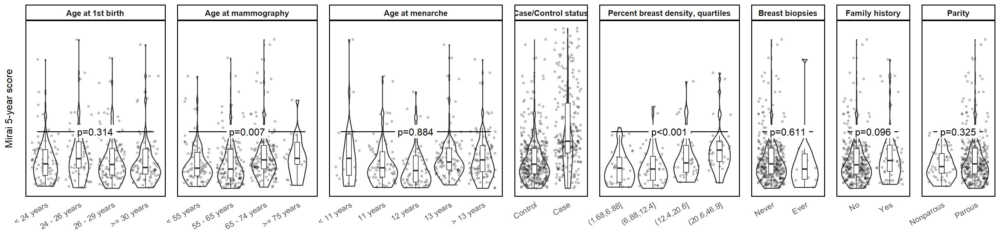
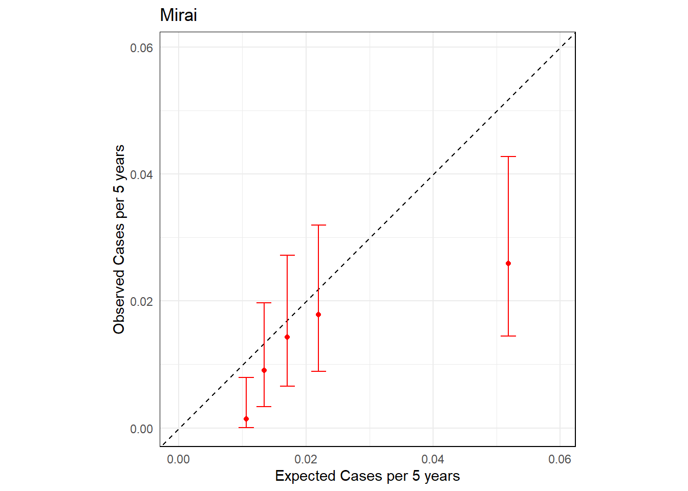
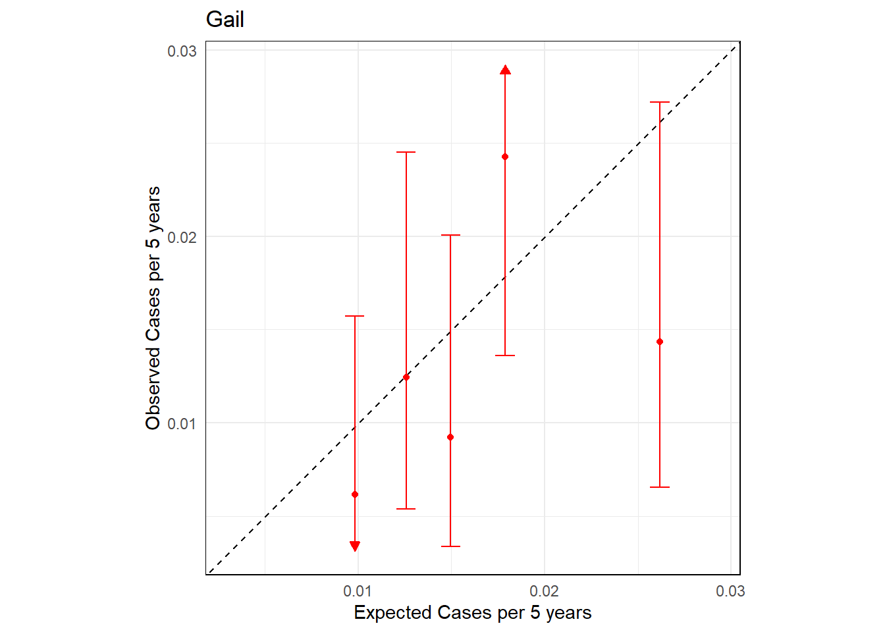
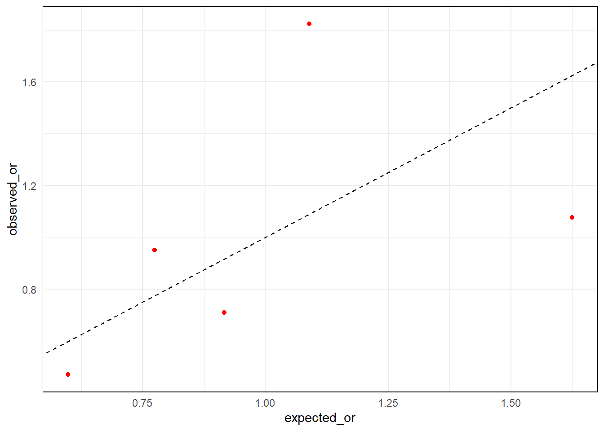
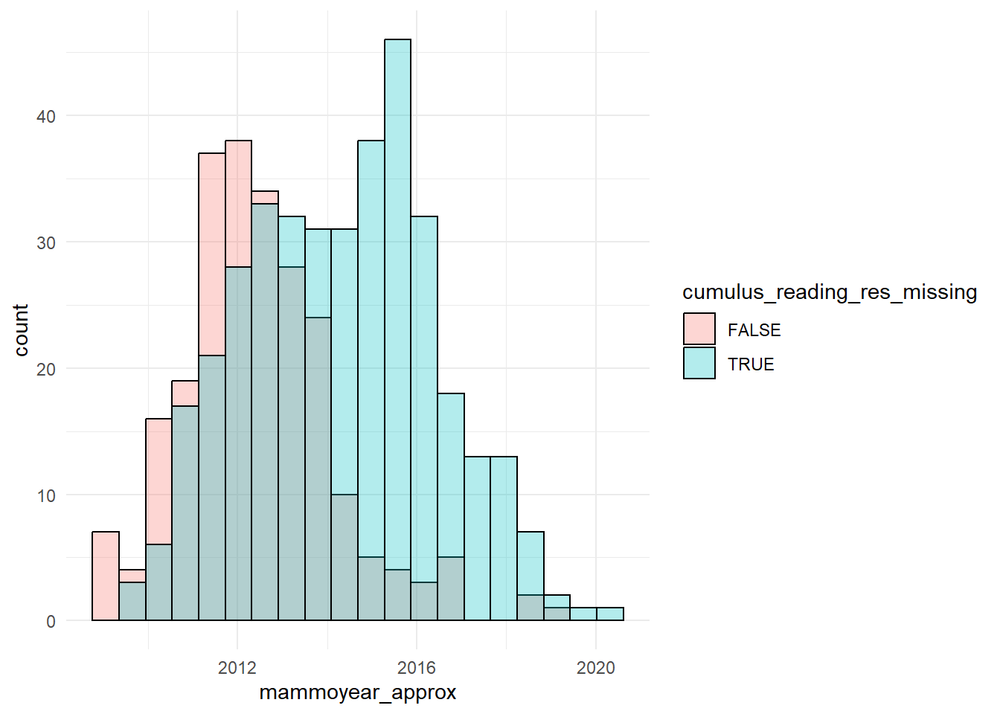

library(ggplot2)
library(dplyr)
library(readr)
library(tidyr)
library(sqldf)
library(stringr)
library(lubridate)
library(gt)
library(pROC)
library(crosstable)
library(readxl)
library(Hmisc)
library(nftbart)
library(BCRA) # GAIL SCORE
library(GGally)
library(purrr)
library(broom)
library(gtsummary)
library(patchwork)
library(scales)
library(iCARE)
library(forcats)
library(rsample)
library(ggsankey)Mammography AI Breast Cancer Risk Stratification in a UK Population
Set-up
Packages
Set working directory
setwd(dirname(rstudioapi::getActiveDocumentContext()$path))Read in data
# Function for counting participants for CONSORT diagram
count_population <- function(data){
data_subset <- data_mammoset |>
filter(TCode %in% data$TCode) |>
select(TCode, CaseControlRequestStatus) |>
distinct() |>
xtabs(formula = ~ CaseControlRequestStatus)
return(data_subset)
}
# Defining population: Eligible DICOM UIDS
eligible_dicoms_fn <- "../../../../../data/case_control/population/eligible_dicomuids_mammodate_strategyB_cumulus.csv"
eligible_dicom_uids <- read.csv(eligible_dicoms_fn)
# Read in MammoSet
data_mammoset <- read.csv("//rds/data/DGE/DUDGE/Shared/GENERATIONS/CoreData/v20230927/RDSCCMammoSet_v1.csv")
# Remove from eligible UIDs those selected for USD Study
eligible_dicom_uids <- eligible_dicom_uids |>
filter(!SOPInstanceUID %in% data_mammoset$SOPInstanceUID[data_mammoset$Comments == "USD Study Only"])
# Read in images data to get case/control status from selection
cc_selection <- data_mammoset |>
group_by(TCode) |>
summarise(cc_status = first(CaseControlRequestStatus)) |>
mutate(cc_status = if_else(cc_status == 2, 0, cc_status))
# Read in year of entry to study
year.entry <- read.csv("//rds/data/DGE/DUDGE/Shared/GENERATIONS/Event_Years/RDSTrueYear.csv") |>
select(TCode, Entry)Read in appropriate functions
source("../helper_functions/data_processing.R")
source("../helper_functions/Load_RDS_data.R")
source("../1_score_generation/GAIL_score_generation.R")
source("../helper_functions/append_event_and_risk.R")Additional helper functions
# Clean risk factors
clean_risk_factors <- function(df) {
df %>%
mutate(
N_Biop = factor(N_Biop),
N_Rels = factor(N_Rels),
AgeMen = na_if(AgeMen, 99),
Parous = if_else(Age1st == 98, "Nonparous", "Parous"),
Age1st = if_else(Age1st %in% c(98,99), NA, Age1st),
Race = factor(Race),
bodysizebminow = na_if(bodysizebminow, 999)
)
}
# Test for significant association
assoc_tests <- function(df, y, preds, time_adjust = TRUE) {
map_dfr(preds, ~{
predictor_name <- .x
formula_str <- if (time_adjust) {
paste('qlogis(',y,'/100)', "~", predictor_name, "+ time_start_to_mammo")
} else {
paste('qlogis(',y,'/100)', "~", predictor_name)
}
model <- lm(as.formula(formula_str), data = df %>% filter(!is.na(!!sym(predictor_name))))
model %>%
tidy() %>%
filter(startsWith(term, predictor_name)) %>%
select(statistic = estimate, se = std.error, p.value) %>%
mutate(
r.squared = glance(model)$r.squared,
variable = predictor_name,
test = "lm"
)
})
}
# Plotting MIRAI vs predictors
plot_y_vs_all <- function(
df,
y = "mirai_score_5y",
predictors = c(
"T1", "N_Biop", "AgeMen", "Age1st", "Parous", "N_Rels",
"cumulus_reading"
),
time_adjust = F
) {
df_clean <- clean_risk_factors(df)
preds <- intersect(predictors, names(df_clean))
tests <- assoc_tests(df_clean, y, preds, time_adjust = time_adjust)
list(plot = NULL, tests = tests)
}Analysis
Calculate scores and return data
scores_and_rf_data <- eligible_dicom_uids %>%
append_event_data()Checking CSV data file:
//rds/data/dge/dudge/shared/GENERATIONS/CoreData/v20230927/RDSRiskFactors.csv
Successful CSV import: 116664 rows
Checking CSV data file:
//rds/data/dge/dudge/shared/GENERATIONS/CoreData/v20230927/RDSCaSummary_V1.csv
Successful CSV import: 38897 rows
Checking CSV data file:
//rds/data/dge/dudge/shared/GENERATIONS/CoreData/v20230927/RDSCollections_v1_Full.csv
Successful CSV import: 116663 rows
Number of participants: 621
Removing 0 participants with invalid start/end ages
Number of participants: 621
Removing 0 participants with prior all_breast cancer
Number of participants: 621
Removing 0 with invalid risk scores
Number of participants: 621
Removing 0 to be excluded
Number of participants: 621count_population(scores_and_rf_data)CaseControlRequestStatus
1 2
248 373 scores_and_rf_data <- scores_and_rf_data %>% append_risk_scores(read.csv(eligible_dicoms_fn), years = 5, return_data=T)Checking CSV data file:
//rds/data/dge/dudge/shared/GENERATIONS/CoreData/v20230927/RDSRiskFactors.csv
Successful CSV import: 116664 rows
[1] Error_Ind set_T1_missing set_T2_missing NB_Cat
[5] AM_Cat AF_Cat NR_Cat R_Hyp
[9] set_HyperP_missing set_R_Hyp_missing set_Race_missing CharRace
<0 rows> (or 0-length row.names)count_population(scores_and_rf_data$output)CaseControlRequestStatus
1 2
248 369 scores_and_rf_data$output <- scores_and_rf_data$output %>%
filter(!(time.of.onset < 1)) # drop non-DCIS/LCIS <1yr dx
count_population(scores_and_rf_data$output)CaseControlRequestStatus
1 2
247 369 scores_and_rf_data$output <- scores_and_rf_data$output |>
# Need MIRAI scale to be different
mutate(mirai_score_5y = 100*mirai_score_5y) |>
merge(cc_selection, by = "TCode", all.x = T)
# Tabulate request CC status with calculated CC status from time of mammogram
with(scores_and_rf_data$output, table(cc_status, is.finite(time.of.onset)))
cc_status FALSE TRUE
0 356 13
1 6 241# Get cancer-free time from study entry for those included
cancer.free.time <- scores_and_rf_data$output |>
select(TCode) |>
do(create_analytical_dataset(., cancer = "all_breast")) |>
mutate(cancer.free.time = pmin(study.exit.age - study.entry.age, time.of.onset)) |>
select(TCode, cancer.free.time)Checking CSV data file:
//rds/data/dge/dudge/shared/GENERATIONS/CoreData/v20230927/RDSRiskFactors.csv
Successful CSV import: 116664 rows
Checking CSV data file:
//rds/data/dge/dudge/shared/GENERATIONS/CoreData/v20230927/RDSCaSummary_V1.csv
Successful CSV import: 38897 rows
Checking CSV data file:
//rds/data/dge/dudge/shared/GENERATIONS/CoreData/v20230927/RDSCollections_v1_Full.csv
Successful CSV import: 116663 rows
Number of participants: 616
Removing 0 participants with invalid start/end ages
Number of participants: 616
Removing 0 participants with prior all_breast cancer
Number of participants: 616
Removing 0 with invalid risk scores
Number of participants: 616
Removing 0 to be excluded
Number of participants: 616Create matching variables
#' Function to append matching variables onto supplied data
#'
#' params: data DataFrame with data
#'
#' returns: Dataframe with matching variables appended
#'
#'
#' Logic:
#' Find all categories with at least one control: Categories1
#' Find all categories with only cases: Categories2
#' Expand Categories1 to capture all of Categories2
build_matching_variables <- function(data) {
# # Create initial cutpoints
# match.mammo.age.cuts =
# with(data |> filter(is.finite(time.of.onset) | cc_status == 0),
# seq(5*round(study.entry.age/5),
# max_bound, by = 5))
# > all <- with(temp_cmls, as.integer(unique(cut(study.entry.age, breaks = seq(10, 110, by = 5), ordered_result = T))))
# > cases_only <- with(temp_cmls|>filter(cc_status == 1), as.integer(unique(cut(study.entry.age, breaks = seq(10, 110, by = 5), ordered_result = T))))
# > while(true)
# > setdiff(all, cases_only)
# > if setdiff is empty: break
# > for each of the elements in the setdiff:
# > # Find adjecent category from all
# > # If >1 adjacent category, then pick the one with more participants
# > # Assign new categories to each observation
# > That is our final grouping.
}# # Creating matching variables that were used in the matching process when matching cases and controls
# # Categories have to be such that if cases are represented in the category - there has to be a control represented
# scores_and_rf_data$output <- scores_and_rf_data$output |>
# merge(cancer.free.time, by = "TCode", all.x = T) |>
# merge(year.entry, by = "TCode", all.x = T) |>
# filter(time.of.onset > 1) |>
# do(build_matching_variables(.))# Creating matching variables that were used in the matching process when matching cases and controls
# Categories have to be such that if cases are represented in the category - there has to be a control represented
# Should we make these categories different for cumulus subset or no? Gut check says no but could make categories larger for the whole study pop if so?
scores_and_rf_data$output <- scores_and_rf_data$output |>
merge(cancer.free.time, by = "TCode", all.x = T) |>
merge(year.entry, by = "TCode", all.x = T) |>
# Remove non-white participants
# filter(ethnew5 == 1) |>
# Remove cases with no diagnosis
filter(is.finite(time.of.onset) | cc_status == 0) |>
mutate(
# Age at mammogram
match.mammo.age = cut(study.entry.age, breaks = seq(10, 110, by = 5)),
# For Cumulus
match.mammo.age = if_else(match.mammo.age == "(40,45]", "(45,50]", match.mammo.age),
# For Transpara (to disable to reproduce original results)
# match.mammo.age = if_else(match.mammo.age == "(75,80]", "(80,85]", match.mammo.age),
# Age at entry
match.entry.age = cut(AgeatEntry, breaks = seq(10, 110, by = 5)),
match.entry.age = if_else(match.entry.age == "(30,35]", "(35,40]", match.entry.age),
# Ethnicity
match.ethnicity = as.factor(if_else(ethnew5 == 1, 1, 0)),
# Year of entry
match.year.entry = case_when(
Entry <= 2005 ~ "<=2005",
Entry >= 2008 ~ ">=2008",
TRUE ~ as.character(Entry)
),
# Cancer free time from entry
match.cancer.free.time = case_when(
cancer.free.time < 10 ~ "[0,10)",
cancer.free.time <13 ~ "[10,13)",
TRUE ~ "[13,16)"
)
)
count_population(scores_and_rf_data$output)CaseControlRequestStatus
1 2
241 369 Figure 1
Violin plots of risk factors and Mirai
# Get p values
# Get data relevant for Table 2
study.data <- scores_and_rf_data$output %>%
select('TCode', 'cc_status', 'cumulus_reading', 'mirai_score_5y', 'gail_score',
'bodysizebminow') %>%
left_join(scores_and_rf_data$gail_data, by='TCode') |>
mutate(Parous = if_else(Age1st == 98, "Nonparous", "Parous"))
# Univariable association test
correlation <- plot_y_vs_all(study.data %>% filter(cc_status == 0), time_adjust = F)
# Clean risk factors and conduct multivariable test
study.data.cleaned <- clean_risk_factors(study.data %>% filter(cc_status == 0))
preds <- c(
"T1", "N_Biop", "AgeMen", "Age1st", "Parous", "N_Rels",
"cumulus_reading"
)
study.data.cleaned <- study.data.cleaned |>
mutate(across(all_of(preds),
~ ifelse(is.na(.), 1, 0),
.names = "{.col}_NA")) %>%
mutate(
across(all_of(preds), ~ {
if (is.factor(.)) {
addNA(.)
} else {
replace(., is.na(.), 0)
}
})
)
non_factor_preds <- preds[!sapply(study.data.cleaned[preds], is.factor)]
na_cols <- paste0(non_factor_preds, "_NA")
all_preds <- c(preds, na_cols)
formula_str <- paste(all_preds, collapse = "+")
correlation_mv <- summary(lm(as.formula(paste('qlogis(mirai_score_5y/100)', "~", formula_str)), data=study.data.cleaned))
correlation_mv <- as.data.frame(correlation_mv$coefficients)
correlation_mv$variable <- rownames(correlation_mv)
rownames(correlation_mv) <- NULL
correlation_mv <- correlation_mv |>
mutate(
variable = case_when(
variable == "N_Biop1" ~ "N_Biop",
variable == "N_Rels1" ~ "N_Rels",
variable == "ParousParous" ~ "Parous",
TRUE ~ variable
)
)
# Calculate level order for the table
lvl_order <- c(
# case/control
"Control", "Case",
# Age at mammography
"< 55 years", "55 - 65 years", "65 - 74 years", ">= 75 years",
# Age at menarche
"< 11 years", "11 years", "12 years", "13 years", "> 13 years",
# Parity
"Nonparous", "Parous",
# Age at 1st birth
"< 24 years", "24 - 26 years", "26 - 29 years", ">= 30 years",
# Biopsies & relatives
"Never", "Ever", "No", "Yes",
"(1.68,6.88]", "(6.88,12.4]", "(12.4,20.6]", "(20.6,46.9]"
# # Race (if you include it)
# "White", "Non-white"
)
# Create study data
study.data <- scores_and_rf_data$output %>%
select('TCode', 'cc_status', 'cumulus_reading', 'mirai_score_5y', 'gail_score',
'study.entry.age', 'bodysizebminow') %>%
left_join(scores_and_rf_data$gail_data, by='TCode') %>%
mutate(Race =case_when(
Race == 1 ~ 'White',
TRUE ~ 'Non-white'
),
N_Rels = case_when(
N_Rels == 0 ~ '0',
N_Rels >= 1 ~ '1+'
),
AgeMenCat = factor(case_when(
AgeMen == 99 ~ NA,
AgeMen < 11 ~ '< 11 years',
AgeMen==11 ~ '11 years',
AgeMen==12 ~ '12 years',
AgeMen ==13 ~ '13 years',
AgeMen >13 ~ '> 13 years'
)),
Age1stCat = factor(case_when(
Age1st == 98 ~ NA,
Age1st < 24 ~ '< 24 years',
Age1st >= 24 & Age1st < 26 ~ '24 - 26 years',
Age1st >= 26 & Age1st < 30 ~ '26 - 29 years',
Age1st >= 30 ~ '>= 30 years'
)),
AgeCat = case_when(
T1 < 55 ~ '< 55 years',
T1 >= 55 & T1 < 65 ~ '55 - 65 years',
T1 >= 65 & T1 < 75 ~ '65 - 74 years',
T1 >= 75 ~ '>= 75 years'
),
Parous = if_else(Age1st == 98, "Nonparous", "Parous")
) %>%
group_by(cc_status) |>
mutate(
CumulusCat = cut(cumulus_reading, breaks = quantile(cumulus_reading, c(0,0.25,0.5, 0.75,1), na.rm = T))
) |>
mutate(Race = factor(Race, levels=c('White', 'Non-white')))
cat_vars <- c("cc_status", "AgeCat", "AgeMenCat", "Age1stCat", "Parous", "N_Biop", "N_Rels", "Race","CumulusCat")
var_labels <- c(
cc_status = "Case/Control status",
AgeCat = "Age at mammography",
AgeMenCat = "Age at menarche",
Age1stCat = "Age at 1st birth",
Parous = "Parity",
N_Biop = "Breast biopsies",
N_Rels = "Family history",
CumulusCat = "Percent breast density, quartiles"
)
# Recode and split into two parts
study_recoded <- study.data %>%
mutate(
cc_status = factor(cc_status,
levels = c(0, 1),
labels = c("Control", "Case")),
N_Biop = factor(N_Biop,
levels = c(0, 1),
labels = c("Never", "Ever")),
N_Rels = factor(N_Rels,
levels = c("0", "1+"),
labels = c("No", "Yes")),
CumulusCat = factor(CumulusCat,
levels = c("(1.68,6.88]", "(6.88,12.4]", "(12.4,20.6]", "(20.6,46.9]"),
labels = c("(1.68,6.88]", "(6.88,12.4]", "(12.4,20.6]", "(20.6,46.9]"))
) %>% ungroup()
# Part A: Case/Control status block
long_casecontrol <- study_recoded %>%
select(cc_status, mirai_score_5y) %>%
rename(level = cc_status) %>%
mutate(variable = "cc_status")
# Part B: Other variables, restricted to controls
long_controls <- study_recoded %>%
filter(cc_status == "Control") %>%
select(AgeCat, AgeMenCat, Age1stCat, Parous, N_Biop, N_Rels, CumulusCat, mirai_score_5y) %>%
pivot_longer(
cols = c(AgeCat, AgeMenCat, Age1stCat, Parous, N_Biop, N_Rels, CumulusCat),
names_to = "variable",
values_to = "level",
values_drop_na = TRUE # <- no NA categories at all
)
violin_long <- bind_rows(long_casecontrol, long_controls) %>%
mutate(
variable = factor(variable, levels = c(
"cc_status","AgeCat","AgeMenCat","Age1stCat","Parous","N_Biop","N_Rels","CumulusCat","Race"
)),
level = fct_relevel(level, lvl_order)
# If you want NA to appear last as "Missing", uncomment:
# level = fct_explicit_na(level, na_level = "Missing") |> fct_relevel("Missing", after = Inf)
)
# count non-missing observations per (variable, level)
violin_tagged <- violin_long %>%
group_by(variable, level) %>%
mutate(n_obs = sum(!is.na(mirai_score_5y))) %>%
ungroup()
# Alter correlation_mv for use in violin plots
# Get the total number of levels per variable
no_levels <- violin_tagged |>
select(variable, level) |>
distinct() |>
group_by(variable) |>
summarise(total_levels = n())
# Add to correlation_mv and do formatting
correlation_mv_plot <- correlation_mv |>
mutate(
variable = case_when(
variable %in% c("AgeMen", "Age1st") ~ paste0(variable, "Cat"),
variable == "T1" ~ "AgeCat",
variable == "cumulus_reading" ~ "CumulusCat",
TRUE ~ variable
),
p_value = case_when(
`Pr(>|t|)` < 0.001 ~ "p<0.001",
TRUE ~ paste0("p=", sprintf("%.3f", `Pr(>|t|)`))
),
mirai_score_5y = 3,
) |>
merge(no_levels, by = "variable") |>
mutate(
level = (total_levels+1)/2,
min_level = 0.75,
max_level = total_levels + 0.25
)
few_data <- dplyr::filter(violin_tagged, n_obs < 5)
many_data <- dplyr::filter(violin_tagged, n_obs >= 5)
p <- ggplot(violin_tagged, aes(x = level, y = mirai_score_5y)) +
geom_jitter(
data = many_data,
color = "black", alpha = 0.2, size = 1
) + # Points for < 5 observations
geom_point(
data = few_data,
shape = 21, fill = NA, color = "black", alpha = 0.7, size = 1.7
) + # Points for < 5 observations
geom_violin(
data = many_data,
fill = NA, linewidth = 0.6, trim = TRUE
) + # Violins for >= 5 observations
geom_boxplot(
data = many_data,
width = 0.15, linewidth = 0.5, outlier.shape = NA,
) +
geom_segment(
data = correlation_mv_plot,
aes(x = min_level,
xend = max_level,
yend = mirai_score_5y)
) +
geom_label(
data = correlation_mv_plot,
aes(label = p_value, x = level),
border.colour = "white"
) +
facet_grid(
~ variable,
scales = "free_x",
space = "free_x",
labeller = as_labeller(var_labels)
) +
labs(x = NULL, y = "Mirai 5-year score") +
theme_minimal(base_size = 12) +
coord_trans(y = "log10") + # transform AFTER stats
scale_y_continuous(
breaks = c(0.01, 0.02, 0.05, 0.1, 0.2),
labels = scales::label_number(accuracy = 0.001, trim = TRUE),
# breaks = c(0.01*100, 0.02*100, 0.05*100, 0.1*100, 0.2*100),
# breaks = seq(0, 5),
# labels = scales::label_number(accuracy = 0.001*100, trim = TRUE),
# limits = c(0, 5)
) +
theme(
panel.spacing = unit(1, "lines"),
panel.border = element_rect(color = "black", fill = NA, size = 1),
strip.background = element_rect(color = "black", size = 1),
panel.grid.major.x = element_blank(),
strip.placement = "outside",
strip.text.x = element_text(face = "bold"),
axis.text.x = element_text(angle = 30, hjust = 1),
axis.title.y = element_text(margin = margin(r = 14))
)
# PNG
ggsave(
filename = "../../results/plots/figure_1.png",
plot = p,
width = 22, height = 4, units = "in", dpi = 300,
bg = "white"
)
# SVG
ggsave(
filename = "../../results/plots_svg/figure_1.svg",
plot = p,
width = 22, height = 4, units = "in",
bg = "transparent"
)p
Table 1
Descriptive table of the study population for the variables included in the GAIL model
# Calculate level order for the table
lvl_order <- c(
# case/control
"Control", "Case",
# Age at mammography
"< 55 years", "55 - 65 years", "65 - 74 years", ">= 75 years",
# Age at menarche
"< 11 years", "11 years", "12 years", "13 years", "> 13 years",
# Age at 1st birth
"< 24 years", "24 - 26 years", "26 - 29 years", ">= 30 years",
# Biopsies & relatives
"0", "1+",
# Race (if you include it)
"White", "Non-white"
)
study.data <- scores_and_rf_data$output %>%
# mutate(cumulus_eligible = !is.na(cumulus_reading)) |>
select('TCode', 'cc_status', 'time.of.onset', 'cumulus_reading', 'mirai_score_5y', 'gail_score',
'study.entry.age', 'bodysizebminow', 'diagyear', 'ICDt', 'er_Status') %>%
left_join(scores_and_rf_data$gail_data, by='TCode') %>%
mutate(
time.of.onset = if_else(!is.finite(time.of.onset), NA, time.of.onset),
Race =case_when(
Race == 1 ~ 'White',
TRUE ~ 'Non-white'
),
N_Rels = case_when(
N_Rels == 0 ~ '0',
N_Rels >= 1 ~ '1+'
)
# cumulus_eligible = if_else(cumulus_eligible, "Yes ", "No ")
) %>%
mutate(Race = factor(Race, levels=c('White', 'Non-white')))
data_mammoimages <- read.csv("//rds/data/DGE/DUDGE/Shared/GENERATIONS/CoreData/v20230927/RDSCCMammoImages_v1.csv")
data_mammoimages <- data_mammoimages %>% filter(SOPInstanceUID %in% eligible_dicom_uids$SOPInstanceUID) %>%
group_by(TCode) %>% dplyr::summarize(manuf = first(Manufacturer), manuf_model = first(ManuModelName))
study.data <- study.data %>% left_join(data_mammoimages, by='TCode')
###########
# Table 1 #
###########
# Demographics:
# study.entry.age
# Risk factors: # "T1", #HypPlas, "N_Biop", "AgeMen", "Age1st", "N_Rels", #Race
# T1: Age at mammogram
# HypPlas: History of atypical hyperplasia (0 = No, 1 = Yes, 99 = Missing)
# N_Biop: Number of breast biopsies with benign findings
# AgeMen: Age at menarche (Numeric, 99 = Missing)
# Age1st: Age at first pregnancy (Numeric, 98 = Missing)
# N_Rels: Number of first-degree relatives with breast cancer (Numeric, NA = Missing)
# Race: Race (White, African-American, Hispana/Latina, Asian-American, American Indian or Alaskan Native, Unknown)
# (1 = White, 2 = African-American,3 = Hispanic American, 4 = Other (Native American and Unknown), 5 = Hispanic American (Foreign-born),
# 6 = Chinese-American, 7: Japanese-American, 8: Filipino-American, 9: Hawaiian-American, 10 = Other Pacific Islander, 11 = Other Asian)
# HypPlas not shown due to absence of data.
table.one <-
study.data %>%
mutate(
diagage = T1 + time.of.onset,
cc_status = factor(cc_status, levels=c(0, 1), labels = c('Control', 'Case')),
HypPlas = factor(HypPlas, levels=c(0, 1), labels = c('No', 'Yes')),
N_Biop = factor(N_Biop, levels=c(0,1), labels = c("0", "1+")),
N_Rels = factor(N_Rels),
AgeMen = ifelse(AgeMen != 99, AgeMen, NA),
Age1st = case_when(
Age1st == 98 ~ "Nulliparous",
Age1st == 99 ~ NA,
Age1st < 24 ~ "<24",
Age1st < 26 ~ "24-26",
Age1st < 29 ~ "26-29",
TRUE ~ "30+"
),
invasive = case_when(
is.na(ICDt) ~ "Non-case",
substr(ICDt, 1, 3) == "C50" ~ "Invasive",
TRUE ~ "DCIS"
),
er_Status = case_when(
is.na(ICDt) ~ "Non-case",
is.na(er_Status) ~ "Unknown",
TRUE ~ er_Status
),
Race = factor(Race),
# cumulus_eligible = factor(cumulus_eligible)
) %>% select(cc_status, T1, manuf_model, Race, AgeMen, Age1st, N_Biop, N_Rels, mirai_score_5y, gail_score, cumulus_reading, diagage, time.of.onset, invasive, er_Status) |>
# Removing information on cancer diagnoses for controls
mutate(
time.of.onset = if_else(cc_status == "Control", NA, time.of.onset),
diagage = if_else(cc_status == "Control", NA, diagage),
invasive = if_else(cc_status == "Control", "Non-case", invasive),
invasive = factor(invasive, levels = c("Invasive", "DCIS", "Non-case")),
er_Status = if_else(cc_status == "Control", "Non-case", er_Status),
er_Status = factor(er_Status, levels = c("Positive", "Negative", "Unknown", "Non-case")),
) |>
tbl_summary(
by = cc_status, # stratify by CC status
type = list(
T1 ~ "continuous",
diagage ~ "continuous",
time.of.onset ~ "continuous",
AgeMen ~ "continuous",
mirai_score_5y ~ "continuous",
gail_score ~ "continuous",
cumulus_reading ~ "continuous",
invasive ~ "categorical"
),
label = list(
T1 ~ "Age at mammogram (years), Median (IQR)",
manuf_model ~ "Mammography device used",
Race ~ "Race/ethnicity",
AgeMen ~ "Age at menarche (years), Median (IQR)",
Age1st ~ "Age at first live birth (years)",
N_Biop ~ "No. benign breast biopsies",
N_Rels ~ "No. 1st-degree relatives with breast cancer",
mirai_score_5y ~ "Mirai 5-year absolute risk (%), Median (IQR)",
gail_score ~ "Gail 5-year absolute risk (%), Median (IQR)",
cumulus_reading ~ "Percent breast density (%), Median (IQR)",
diagage ~ "Age at BC diagnosis (years), Median (IQR)",
time.of.onset ~ "Time from mammogram to BC diagnosis (years), Median (IQR)",
invasive ~ "Cancer type",
er_Status ~ "ER status"
),
statistic = list(
all_continuous() ~ "{median} ({p25}-{p75})",
all_categorical() ~ "{n} ({p}%)"
),
digits = all_continuous() ~ 1,
missing = "ifany"
) |>
modify_header(update = list(
stat_1 ~ "**Controls, N = {n}**",
stat_2 ~ "**Cases, N = {n}**"
), label ~ "**Characteristic**") |>
bold_labels() |>
modify_table_body(
~ .x |>
mutate(
stat_1 = if_else(stat_1 %in% c("NA (NA-NA)", "0 (0%)"), "-", stat_1)
) |>
filter(!(row_type == "missing" & stat_2 == "0")) |>
filter(!label == "Non-case")
)Warning: The `update` argument of `modify_header()` is deprecated as of gtsummary 2.0.0.
ℹ Use `modify_header(...)` input instead. Dynamic dots allow for syntax like
`modify_header(!!!list(...))`.
ℹ The deprecated feature was likely used in the gtsummary package.
Please report the issue at <https://github.com/ddsjoberg/gtsummary/issues>.# Print in quarto
table.one| Characteristic | Controls, N = 3691 | Cases, N = 2411 |
|---|---|---|
| Age at mammogram (years), Median (IQR) | 63.6 (56.3-68.7) | 61.1 (54.9-65.9) |
| Mammography device used | ||
| Lorad Selenia | 228 (62%) | 168 (70%) |
| Selenia Dimensions | 141 (38%) | 73 (30%) |
| Race/ethnicity | ||
| White | 365 (99%) | 238 (99%) |
| Non-white | 4 (1.1%) | 3 (1.2%) |
| Age at menarche (years), Median (IQR) | 13.0 (11.0-14.0) | 12.0 (11.0-13.0) |
| Unknown | 40 | 27 |
| Age at first live birth (years) | ||
| <24 | 78 (21%) | 42 (18%) |
| 24-26 | 65 (18%) | 38 (16%) |
| 26-29 | 83 (23%) | 45 (19%) |
| 30+ | 94 (26%) | 84 (35%) |
| Nulliparous | 45 (12%) | 30 (13%) |
| Unknown | 4 | 2 |
| No. benign breast biopsies | ||
| 0 | 359 (97%) | 225 (93%) |
| 1+ | 10 (2.7%) | 16 (6.6%) |
| No. 1st-degree relatives with breast cancer | ||
| 0 | 314 (85%) | 186 (77%) |
| 1+ | 55 (15%) | 55 (23%) |
| Mirai 5-year absolute risk (%), Median (IQR) | 1.6 (1.3-2.2) | 2.5 (2.0-5.3) |
| Gail 5-year absolute risk (%), Median (IQR) | 1.7 (1.4-2.0) | 1.7 (1.4-2.2) |
| Percent breast density (%), Median (IQR) | 12.4 (6.9-20.8) | 16.1 (8.8-23.9) |
| Unknown | 226 | 147 |
| Age at BC diagnosis (years), Median (IQR) | - | 64.1 (57.9-69.1) |
| Time from mammogram to BC diagnosis (years), Median (IQR) | - | 2.9 (2.1-3.1) |
| Cancer type | ||
| Invasive | - | 189 (78%) |
| DCIS | - | 52 (22%) |
| ER status | ||
| Positive | - | 138 (57%) |
| Negative | - | 34 (14%) |
| Unknown | - | 69 (29%) |
| 1 Median (Q1-Q3); n (%) | ||
# DOCX
gt::gtsave(gtsummary::as_gt(table.one), filename = "../../results/tables/table_1.docx")Table 2
model <- list()
or_estimations <- scores_and_rf_data$output
for(score in c("gail_score", "mirai_score_5y", "cumulus_reading")){
# Create matching variables
temp_data <- or_estimations |>
filter(!is.na(!!sym(score))) |>
filter(cc_status == 0)
# Fit model calculating score using matching variables
# Fitting model on controls that have the score measured
model[[score]] <- lm(as.formula(paste0("qlogis(", score, "/100) ~ match.entry.age + match.year.entry + match.cancer.free.time + match.mammo.age + match.ethnicity")), data = temp_data)
# Predict on whole dataset and calculate residuals
or_estimations[!is.na(or_estimations[[score]]), paste0(score, "_res")] <- predict(model[[score]], or_estimations[!is.na(or_estimations[[score]]),])
or_estimations[[paste0(score, "_res")]] <- qlogis(or_estimations[[score]]/100) - or_estimations[[paste0(score, "_res")]]
# Calculate missingness indicator variable
or_estimations[[paste0(score, "_res_missing")]] <- is.na(or_estimations[[paste0(score, "_res")]])
or_estimations[[paste0(score, "_res")]][is.na(or_estimations[[paste0(score, "_res")]])] <- 0
}
# Loop though folds
# Initialise dataframe for results
table2 <- data.frame(model= character(0), dataset = character(0), MIRAI = numeric(0), MIRAI_SD = numeric(0), GAIL = numeric(0), GAIL_SD = numeric(0), Cumulus = numeric(0), Cumulus_SD = numeric(0), AUC = numeric(0), fold = numeric(0))
# Loop through rows
i <- 0
# Parameters of repeated k-fold CV
k <- 5 # Number of folds
N <- 10 # Number of bootstrap iterations
# Set seed
set.seed(987)
# Generate the folds
cross_val_data <- or_estimations |>
slice(sample(1:n())) |>
mutate(group = ceiling(k * row_number()/n()))
for(fold in 1:k){
# Loop through combinations of the risk scores
all_risk_scores <- c("mirai_score_5y", "gail_score", "cumulus_reading")
risk_score_combinations <- lapply(1:length(all_risk_scores), function(m) combn(all_risk_scores, m, simplify = FALSE))
risk_score_combinations <- unlist(risk_score_combinations, recursive = FALSE)
# Normalize train/test folds separately
for(score in c("gail_score_res", "mirai_score_5y_res", "cumulus_reading_res")){
train_sd <- cross_val_data |> filter(group != fold) |> dplyr::pull(paste0(score)) |> sd(na.rm = TRUE)
cross_val_data <- cross_val_data |>
mutate(
!!sym(score) := case_when(
group != fold ~ !!sym(score) / train_sd,
group == fold ~ !!sym(score) / train_sd
)
)
}
model <- 0
for(comb in risk_score_combinations){
# If density not included - run on everyone
if(!"cumulus_reading" %in% comb){
i <- i + 1
model <- model + 1
# Write and run glm with cc_status as outcome and residuals + missingness indicators as predictors
formula_glm <- paste0("cc_status ~ ", paste0(comb, "_res", collapse = " + "))
test <- glm(as.formula(formula_glm), data = cross_val_data |> filter(group != fold), family = 'binomial')
# Get case/control split for table
cc_split <- paste0(cross_val_data |> filter(cc_status == 1) |> nrow(), "/", cross_val_data |> filter(cc_status == 0) |> nrow())
# Grab MIRAI coef
if("mirai_score_5y" %in% comb){
coef <- test$coefficients[names(test$coefficients) == "mirai_score_5y_res"]
se <- summary(test)$coefficients[rownames(summary(test)$coefficients) == "mirai_score_5y_res",2]
mirai_or <- coef
mirai_sd <- se
} else {
mirai_or <- NA
mirai_sd <- NA
}
# Grab GAIL coef
if("gail_score" %in% comb){
coef <- test$coefficients[names(test$coefficients) == "gail_score_res"]
se <- summary(test)$coefficients[rownames(summary(test)$coefficients) == "gail_score_res",2]
gail_or <- coef
gail_sd <- se
} else {
gail_or <- NA
gail_sd <- NA
}
# Calculate AUC
auc <- cross_val_data |>
filter(group == fold) |>
mutate(fitted.values = predict(test, newdata = pick(everything()), type = "response")) |>
roc(cc_status, fitted.values, direction = "<") |>
auc()
# Write row to the dataframe
new_row <- c(paste0("Model ", model), cc_split, mirai_or, mirai_sd, gail_or, gail_sd, NA, NA, auc, fold)
table2[nrow(table2)+1,] <- new_row
}
i <- i + 1
model <- model + 1
# Write and run glm with cc_status as outcome and residuals + missingness indicators as predictors
formula_glm <- paste0("cc_status ~ ", paste0(comb, "_res", collapse = " + "))
test <- glm(as.formula(formula_glm), data = cross_val_data |> filter(!is.na(cumulus_reading))|> filter(group != fold), family = 'binomial')
# Get case/control split for table
cc_split <- paste0(cross_val_data |> filter(!is.na(cumulus_reading)) |> filter(cc_status == 1) |> nrow(), "/", cross_val_data |> filter(!is.na(cumulus_reading)) |> filter(cc_status == 0) |> nrow())
# Grab MIRAI coef
if("mirai_score_5y" %in% comb){
coef <- test$coefficients[names(test$coefficients) == "mirai_score_5y_res"]
se <- summary(test)$coefficients[rownames(summary(test)$coefficients) == "mirai_score_5y_res",2]
mirai_or <- coef
mirai_sd <- se
} else {
mirai_or <- NA
mirai_sd <- NA
}
# Grab GAIL coef
if("gail_score" %in% comb){
coef <- test$coefficients[names(test$coefficients) == "gail_score_res"]
se <- summary(test)$coefficients[rownames(summary(test)$coefficients) == "gail_score_res",2]
gail_or <- coef
gail_sd <- se
} else {
gail_or <- NA
gail_sd <- NA
}
# Grab Cumulus coef
if("cumulus_reading" %in% comb){
coef <- test$coefficients[names(test$coefficients) == "cumulus_reading_res"]
se <- summary(test)$coefficients[rownames(summary(test)$coefficients) == "cumulus_reading_res",2]
cumulus_or <- coef
cumulus_sd <- se
} else {
cumulus_or <- NA
cumulus_sd <- NA
}
# Calculate AUC
auc <- cross_val_data |>
filter(group == fold) |>
filter(!is.na(cumulus_reading)) |>
mutate(fitted.values = predict(test, newdata = pick(everything()), type = "response")) |>
roc(cc_status, fitted.values, direction = "<") |>
auc()
# Write row to the dataframe
new_row <- c(paste0("Model ", model), cc_split, mirai_or, mirai_sd, gail_or, gail_sd, cumulus_or, cumulus_sd, auc, fold)
table2[nrow(table2)+1,] <- new_row
}
}
# Aggregate data
table2_agg <- table2 |>
mutate(across(c(MIRAI, MIRAI_SD, GAIL, GAIL_SD, Cumulus, Cumulus_SD, AUC), as.numeric)) |>
group_by(model, dataset) |>
mutate(
MIRAI_wt = 1/MIRAI_SD^2,
GAIL_wt = 1/GAIL_SD^2,
Cumulus_wt = 1/Cumulus_SD^2
) |>
summarise(
MIRAI = exp(sum(MIRAI_wt * MIRAI)/sum(MIRAI_wt)),
GAIL = exp(sum(GAIL_wt * GAIL)/sum(GAIL_wt)),
Cumulus = exp(sum(Cumulus_wt * Cumulus)/sum(Cumulus_wt)),
MIRAI_lci = exp(log(MIRAI) - 1.96*sqrt(1/sum(MIRAI_wt))),
MIRAI_uci = exp(log(MIRAI) + 1.96*sqrt(1/sum(MIRAI_wt))),
GAIL_lci = exp(log(GAIL) - 1.96*sqrt(1/sum(GAIL_wt))),
GAIL_uci = exp(log(GAIL) + 1.96*sqrt(1/sum(GAIL_wt))),
Cumulus_lci = exp(log(Cumulus) - 1.96*sqrt(1/sum(Cumulus_wt))),
Cumulus_uci = exp(log(Cumulus) + 1.96*sqrt(1/sum(Cumulus_wt))),
AUC = mean(AUC),
.groups = "drop"
) |>
mutate(
MIRAI = paste0(sprintf("%.2f", MIRAI), " (", sprintf("%.2f", MIRAI_lci), ", ", sprintf("%.2f", MIRAI_uci), ")"),
GAIL = paste0(sprintf("%.2f", GAIL), " (", sprintf("%.2f", GAIL_lci), ", ", sprintf("%.2f", GAIL_uci), ")"),
Cumulus = paste0(sprintf("%.2f", Cumulus), " (", sprintf("%.2f", Cumulus_lci), ", ", sprintf("%.2f", Cumulus_uci), ")"),
AUC = sprintf("%.2f", AUC)
) |>
select(model, dataset, MIRAI, GAIL, Cumulus, AUC)
# Calculate AUC confidence intervals via bootstrapping
# Loop though folds
# Initialise dataframe for results
table2_boot <- data.frame(model= character(0), AUC = numeric(0), fold = numeric(0), iter = numeric(0))
# Loop through rows
i <- 0
for(r in 1:N){
if(r %% 10 == 0) print(r)
# Set seed
set.seed(987 + r)
# Generate the folds
cross_val_data <- or_estimations |>
slice(sample(1:n(), replace = T)) |>
mutate(group = ceiling(k * row_number()/n()))
for(fold in 1:k){
# Loop through combinations of the risk scores
all_risk_scores <- c("mirai_score_5y", "gail_score", "cumulus_reading")
risk_score_combinations <- lapply(1:length(all_risk_scores), function(m) combn(all_risk_scores, m, simplify = FALSE))
risk_score_combinations <- unlist(risk_score_combinations, recursive = FALSE)
# Normalize train/test folds separately
for(score in c("gail_score_res", "mirai_score_5y_res", "cumulus_reading_res")){
train_sd <- cross_val_data |> filter(group != fold) |> dplyr::pull(paste0(score)) |> sd(na.rm = TRUE)
cross_val_data <- cross_val_data |>
mutate(
!!sym(score) := case_when(
group != fold ~ !!sym(score) / train_sd,
group == fold ~ !!sym(score) / train_sd
)
)
}
model <- 0
for(comb in risk_score_combinations){
# If density not included - run on everyone
if(!"cumulus_reading" %in% comb){
i <- i + 1
model <- model + 1
# Write and run glm with cc_status as outcome and residuals + missingness indicators as predictors
formula_glm <- paste0("cc_status ~ ", paste0(comb, "_res", collapse = " + "))
test <- glm(as.formula(formula_glm), data = cross_val_data |> filter(group != fold), family = 'binomial')
# Calculate AUC
auc <- cross_val_data |>
filter(group == fold) |>
mutate(fitted.values = predict(test, newdata = pick(everything()), type = "response")) |>
roc(cc_status, fitted.values, direction = "<") |>
auc()
# Write row to the dataframe
new_row <- c(paste0("Model ", model), auc, fold, r)
table2_boot[nrow(table2_boot)+1,] <- new_row
}
i <- i + 1
model <- model + 1
# Write and run glm with cc_status as outcome and residuals + missingness indicators as predictors
formula_glm <- paste0("cc_status ~ ", paste0(comb, "_res", collapse = " + "))
test <- glm(as.formula(formula_glm), data = cross_val_data |> filter(!is.na(cumulus_reading))|> filter(group != fold), family = 'binomial')
# Calculate AUC
auc <- cross_val_data |>
filter(group == fold) |>
filter(!is.na(cumulus_reading)) |>
mutate(fitted.values = predict(test, newdata = pick(everything()), type = "response")) |>
roc(cc_status, fitted.values, direction = "<") |>
auc()
# Write row to the dataframe
new_row <- c(paste0("Model ", model), auc, fold, r)
table2_boot[nrow(table2_boot)+1,] <- new_row
}
}
}[1] 10# Get confidence interval from bootstrap
table2_boot_ci <- table2_boot |>
group_by(model, iter) |>
summarise(auc = mean(as.numeric(AUC)),
.groups = "drop") |>
group_by(model) |>
summarise(
auc_lci = quantile(auc, 0.025),
auc_uci = quantile(auc, 0.975),
auc_ci = paste0("(", sprintf("%.2f", auc_lci), ", ", sprintf("%.2f", auc_uci), ")"),
.groups = "drop"
) |>
select(model, auc_ci)
# Combine confidence intervals
table2_clean <- table2_agg |>
merge(table2_boot_ci, by = "model") |>
mutate(auc = paste(AUC, auc_ci)) |>
select(Model = model, `Cases/Controls` = dataset, Mirai = MIRAI, Gail = GAIL, PD = Cumulus, `AUC (95% CI)` = auc) |>
mutate(across(c(Mirai, Gail, PD), \(x) replace_values(x, "NA (NA, NA)" ~ "-"))) |>
gt()
gtsave(table2_clean, "../../results/tables/table_2.docx")table2_clean| Model | Cases/Controls | Mirai | Gail | PD | AUC (95% CI) |
|---|---|---|---|---|---|
| Model 1 | 241/369 | 2.82 (2.52, 3.16) | - | - | 0.74 (0.72, 0.76) |
| Model 10 | 94/143 | 2.19 (1.81, 2.65) | 1.28 (1.12, 1.46) | 1.02 (0.93, 1.11) | 0.66 (0.58, 0.72) |
| Model 2 | 94/143 | 2.19 (1.82, 2.63) | - | - | 0.68 (0.60, 0.73) |
| Model 3 | 241/369 | - | 1.30 (1.19, 1.41) | - | 0.56 (0.54, 0.60) |
| Model 4 | 94/143 | - | 1.27 (1.12, 1.44) | - | 0.56 (0.46, 0.65) |
| Model 5 | 94/143 | - | - | 1.11 (1.02, 1.21) | 0.56 (0.45, 0.62) |
| Model 6 | 241/369 | 2.79 (2.49, 3.13) | 1.22 (1.12, 1.34) | - | 0.74 (0.72, 0.77) |
| Model 7 | 94/143 | 2.21 (1.83, 2.67) | 1.29 (1.13, 1.46) | - | 0.66 (0.59, 0.73) |
| Model 8 | 94/143 | 2.16 (1.79, 2.60) | - | 1.03 (0.95, 1.13) | 0.67 (0.59, 0.72) |
| Model 9 | 94/143 | - | 1.26 (1.11, 1.42) | 1.10 (1.01, 1.20) | 0.56 (0.45, 0.65) |
Supplementary Material
Supplementary Table 1
Correlations of the MIRAI score with variables included in the GAIL model as well as mammographic density
# Get data relevant for Table 2
study.data <- scores_and_rf_data$output %>%
select('TCode', 'cc_status', 'cumulus_reading', 'mirai_score_5y', 'gail_score',
'bodysizebminow') %>%
left_join(scores_and_rf_data$gail_data, by='TCode')
# Univariable association test
correlation <- plot_y_vs_all(study.data %>% filter(cc_status == 0), time_adjust = F)
# Clean risk factors and conduct multivariable test
study.data.cleaned <- clean_risk_factors(study.data %>% filter(cc_status == 0))
preds <- c(
"T1", "N_Biop", "AgeMen", "Age1st", "N_Rels",
"cumulus_reading"
)
study.data.cleaned <- study.data.cleaned |>
mutate(across(all_of(preds),
~ ifelse(is.na(.), 1, 0),
.names = "{.col}_NA")) %>%
mutate(
across(all_of(preds), ~ {
if (is.factor(.)) {
addNA(.)
} else {
replace(., is.na(.), 0)
}
})
)
non_factor_preds <- preds[!sapply(study.data.cleaned[preds], is.factor)]
na_cols <- paste0(non_factor_preds, "_NA")
all_preds <- c(preds, na_cols)
formula_str <- paste(all_preds, collapse = "+")
correlation_mv <- summary(lm(as.formula(paste('qlogis(mirai_score_5y/100)', "~", formula_str)), data=study.data.cleaned))
correlation_mv <- as.data.frame(correlation_mv$coefficients)
correlation_mv$variable <- rownames(correlation_mv)
rownames(correlation_mv) <- NULL
correlation_mv <- correlation_mv |>
mutate(
variable = case_when(
variable == "N_Biop1" ~ "N_Biop",
variable == "N_Rels1" ~ "N_Rels",
TRUE ~ variable
)
)
# Create table 2
supp_table1 <- as.data.frame(correlation$tests) |>
# Process to get beta value with CI
mutate(
upper.ci = statistic + qnorm(0.975)*se,
lower.ci = statistic + qnorm(0.025)*se,
beta_1 = paste0(sprintf("%.2f", statistic), " (", sprintf("%.2f", lower.ci), ", ", sprintf("%.2f", upper.ci), ")"),
r.squared = if_else(r.squared < 0.01, "<0.01", sprintf("%.2f", r.squared))
) |>
merge(correlation_mv, by = "variable") |>
# Process to get MV beta value with CI
mutate(
upper.ci = Estimate + qnorm(0.975)*`Std. Error`,
lower.ci = Estimate + qnorm(0.025)*`Std. Error`,
beta_2 = paste0(sprintf("%.2f", Estimate), " (", sprintf("%.2f",lower.ci), ", ", sprintf("%.2f", upper.ci), ")")
) |>
mutate(variable = factor(variable, levels = c("T1", "N_Biop", "AgeMen", "Age1st", "N_Rels", "cumulus_reading"), labels = c("Age at mammogram (years)", "No. benign breast biopsies","Age at menarche (years)", "Age at first pregnancy (years)", "No. 1st-degree relatives with breast cancer", "Mammographic density"))) |>
arrange(variable) |>
select(variable, beta_1, p_value_1 = p.value, r.squared, beta_2, p_value_2 = `Pr(>|t|)`) |>
mutate(across(starts_with("p_value"), function(x){
case_when(
x < 0.001 ~ "<0.001",
TRUE ~ sprintf("%.3f",x)
)
})) |>
gt() |>
cols_label(
variable ~ md("**Risk Factor**"),
beta_1 ~ md("**Beta (95% CI)**"),
p_value_1 ~ md("**P Value**"),
r.squared ~ md("**R²**"),
beta_2 ~ md("**Beta (95% CI)**"),
p_value_2 ~ md("**P Value**")
) |>
tab_spanner(
label = md("*Univariable*"),
columns = c("beta_1", "p_value_1", "r.squared")
) |>
tab_spanner(
label = md("*Multivariable*"),
columns = c("beta_2", "p_value_2")
)
supp_table1| Risk Factor |
Univariable
|
Multivariable
|
|||
|---|---|---|---|---|---|
| Beta (95% CI) | P Value | R² | Beta (95% CI) | P Value | |
| Age at mammogram (years) | 0.01 (0.00, 0.02) | 0.008 | 0.02 | 0.01 (0.00, 0.02) | 0.006 |
| No. benign breast biopsies | -0.00 (-0.32, 0.31) | 0.977 | <0.01 | -0.08 (-0.40, 0.23) | 0.609 |
| Age at menarche (years) | 0.01 (-0.03, 0.05) | 0.643 | <0.01 | 0.00 (-0.04, 0.04) | 0.962 |
| Age at first pregnancy (years) | -0.00 (-0.01, 0.01) | 0.512 | <0.01 | -0.01 (-0.02, 0.01) | 0.323 |
| No. 1st-degree relatives with breast cancer | 0.13 (-0.02, 0.27) | 0.083 | <0.01 | 0.12 (-0.02, 0.26) | 0.103 |
| Mammographic density | 0.01 (0.01, 0.02) | <0.001 | 0.10 | 0.02 (0.01, 0.02) | <0.001 |
gtsave(supp_table1, "../../results/tables/supp_table_1.docx")Supplementary Table 2
supp_table_2 <- scores_and_rf_data$output |>
select(cc_status, time.of.onset) |>
# mutate(time.of.onset = if_else(time.of.onset > 5, ">5 years", "<=5 years")) |>
mutate(time.of.onset = case_when(
time.of.onset <= 5 ~ "<=5 years",
is.finite(time.of.onset) ~ ">5 years",
TRUE ~ "Control"
)) |>
tbl_summary(
by = cc_status, # stratify by CC status
label = list(
time.of.onset ~ "Time from mammogram to BC diagnosis (years)"
),
statistic = list(
all_continuous() ~ "{median} ({IQR})",
all_categorical() ~ "{n} ({p}%)"
),
digits = all_continuous() ~ 1,
missing = "ifany"
) |>
add_n() |>
modify_header(update = list(
stat_1 ~ "**Controls, N = {n}**",
stat_2 ~ "**Cases, N = {n}**"
), label ~ "**Characteristic**") |>
bold_labels()
# Print in quarto
supp_table_2| Characteristic | N | Controls, N = 3691 | Cases, N = 2411 |
|---|---|---|---|
| Time from mammogram to BC diagnosis (years) | 610 | ||
| <=5 years | 8 (2.2%) | 221 (92%) | |
| >5 years | 5 (1.4%) | 20 (8.3%) | |
| Control | 356 (96%) | 0 (0%) | |
| 1 n (%) | |||
# DOCX
gt::gtsave(gtsummary::as_gt(supp_table_2), filename = "../../results/tables/supp_table_2.docx")
# PNG (for README.md purposes)Supplementary Table 3
# Initialise Supplementary Table
supp_table3 <- data.frame(score = character(0), years = numeric(0), AUC = character(0))
for(years in 1:5){
scores_and_rf_data <- eligible_dicom_uids %>%
append_event_data() %>% append_risk_scores(read.csv(eligible_dicoms_fn), years = years, return_data=T)
scores_and_rf_data$output <- scores_and_rf_data$output |>
# Need MIRAI scale to be different
mutate(mirai_score_5y = 100*mirai_score_5y) |>
merge(cc_selection, by = "TCode", all.x = T)
# Tabulate request CC status with calculated CC status from time of mammogram
with(scores_and_rf_data$output, table(cc_status, is.finite(time.of.onset)))
# Get cancer-free time from study entry for those included
cancer.free.time <- scores_and_rf_data$output |>
select(TCode) |>
do(create_analytical_dataset(., cancer = "all_breast")) |>
mutate(cancer.free.time = pmin(study.exit.age - study.entry.age, time.of.onset)) |>
select(TCode, cancer.free.time)
# Creating matching variables that were used in the matching process when matching cases and controls
# Categories have to be such that if cases are represented in the category - there has to be a control represented
# Should we make these categories different for cumulus subset or no? Gut check says no but could make categories larger for the whole study pop if so?
scores_and_rf_data$output <- scores_and_rf_data$output |>
merge(cancer.free.time, by = "TCode", all.x = T) |>
merge(year.entry, by = "TCode", all.x = T) |>
mutate(
# Age at mammogram
match.mammo.age = cut(study.entry.age, breaks = seq(10, 110, by = 5)),
match.mammo.age = if_else(match.mammo.age == "(40,45]", "(45,50]", match.mammo.age),
# Age at entry
match.entry.age = cut(AgeatEntry, breaks = seq(10, 110, by = 5)),
match.entry.age = if_else(match.entry.age == "(30,35]", "(35,40]", match.entry.age),
# Ethnicity
match.ethnicity = as.factor(if_else(ethnew5 == 1, 1, 0)),
# Year of entry
match.year.entry = case_when(
Entry <= 2005 ~ "<=2005",
Entry >= 2008 ~ ">=2008",
TRUE ~ as.character(Entry)
),
# Cancer free time from entry
match.cancer.free.time = case_when(
cancer.free.time < 10 ~ "[0,10)",
cancer.free.time <13 ~ "[10,13)",
TRUE ~ "[13,16)"
)
) |>
filter(time.of.onset > 1)
for(score in c("gail_score", "mirai_score_5y")){
# Fit model calculating score using matching variables
# Fitting model on controls that have the score measured
model1 <- lm(as.formula(paste0("qlogis(", score, "/100) ~ match.entry.age + match.ethnicity + match.year.entry + match.cancer.free.time + match.mammo.age + match.ethnicity")), data = scores_and_rf_data$output[!is.na(scores_and_rf_data$output[[score]]) & scores_and_rf_data$output$cc_status == 0,])
# Predict score on whole dataset
scores_and_rf_data$output$model1_pred <- NA
scores_and_rf_data$output$model1_pred[!is.na(scores_and_rf_data$output[[score]])] <- predict(model1, scores_and_rf_data$output[!is.na(scores_and_rf_data$output[[score]]),])
# Calculate residual
scores_and_rf_data$output$model1_res <- qlogis(scores_and_rf_data$output[[score]]/100) - scores_and_rf_data$output$model1_pred
# Calculate AUC
auc <- auc(roc(scores_and_rf_data$output$cc_status[!is.na(scores_and_rf_data$output[[score]])], scores_and_rf_data$output$model1_res[!is.na(scores_and_rf_data$output[[score]])]))
auc_ci <- unname(ci.auc(scores_and_rf_data$output$cc_status[!is.na(scores_and_rf_data$output[[score]])], scores_and_rf_data$output$model1_res[!is.na(scores_and_rf_data$output[[score]])], method = "bootstrap"))
row <- c(case_when(score == "gail_score" ~ "GAIL", score == "mirai_score_5y" ~ "Mirai", TRUE ~ "Cumulus"), years, paste0(sprintf("%.2f", auc), " (", sprintf("%.2f",auc_ci[1]), ", ", sprintf("%.2f", auc_ci[3]), ")"))
supp_table3[nrow(supp_table3)+1,] <- row
}
}Checking CSV data file:
//rds/data/dge/dudge/shared/GENERATIONS/CoreData/v20230927/RDSRiskFactors.csv
Successful CSV import: 116664 rows
Checking CSV data file:
//rds/data/dge/dudge/shared/GENERATIONS/CoreData/v20230927/RDSCaSummary_V1.csv
Successful CSV import: 38897 rows
Checking CSV data file:
//rds/data/dge/dudge/shared/GENERATIONS/CoreData/v20230927/RDSCollections_v1_Full.csv
Successful CSV import: 116663 rows
Number of participants: 621
Removing 0 participants with invalid start/end ages
Number of participants: 621
Removing 0 participants with prior all_breast cancer
Number of participants: 621
Removing 0 with invalid risk scores
Number of participants: 621
Removing 0 to be excluded
Number of participants: 621Checking CSV data file:
//rds/data/dge/dudge/shared/GENERATIONS/CoreData/v20230927/RDSRiskFactors.csv
Successful CSV import: 116664 rows
[1] Error_Ind set_T1_missing set_T2_missing NB_Cat
[5] AM_Cat AF_Cat NR_Cat R_Hyp
[9] set_HyperP_missing set_R_Hyp_missing set_Race_missing CharRace
<0 rows> (or 0-length row.names)
Checking CSV data file:
//rds/data/dge/dudge/shared/GENERATIONS/CoreData/v20230927/RDSRiskFactors.csv
Successful CSV import: 116664 rows
Checking CSV data file:
//rds/data/dge/dudge/shared/GENERATIONS/CoreData/v20230927/RDSCaSummary_V1.csv
Successful CSV import: 38897 rows
Checking CSV data file:
//rds/data/dge/dudge/shared/GENERATIONS/CoreData/v20230927/RDSCollections_v1_Full.csv
Successful CSV import: 116663 rows
Number of participants: 617
Removing 0 participants with invalid start/end ages
Number of participants: 617
Removing 0 participants with prior all_breast cancer
Number of participants: 617
Removing 0 with invalid risk scores
Number of participants: 617
Removing 0 to be excluded
Number of participants: 617Setting levels: control = 0, case = 1Setting direction: controls < casesSetting levels: control = 0, case = 1Setting direction: controls < casesSetting levels: control = 0, case = 1Setting direction: controls < casesSetting levels: control = 0, case = 1Setting direction: controls < casesChecking CSV data file:
//rds/data/dge/dudge/shared/GENERATIONS/CoreData/v20230927/RDSRiskFactors.csv
Successful CSV import: 116664 rows
Checking CSV data file:
//rds/data/dge/dudge/shared/GENERATIONS/CoreData/v20230927/RDSCaSummary_V1.csv
Successful CSV import: 38897 rows
Checking CSV data file:
//rds/data/dge/dudge/shared/GENERATIONS/CoreData/v20230927/RDSCollections_v1_Full.csv
Successful CSV import: 116663 rows
Number of participants: 621
Removing 0 participants with invalid start/end ages
Number of participants: 621
Removing 0 participants with prior all_breast cancer
Number of participants: 621
Removing 0 with invalid risk scores
Number of participants: 621
Removing 0 to be excluded
Number of participants: 621Checking CSV data file:
//rds/data/dge/dudge/shared/GENERATIONS/CoreData/v20230927/RDSRiskFactors.csv
Successful CSV import: 116664 rows
[1] Error_Ind set_T1_missing set_T2_missing NB_Cat
[5] AM_Cat AF_Cat NR_Cat R_Hyp
[9] set_HyperP_missing set_R_Hyp_missing set_Race_missing CharRace
<0 rows> (or 0-length row.names)
Checking CSV data file:
//rds/data/dge/dudge/shared/GENERATIONS/CoreData/v20230927/RDSRiskFactors.csv
Successful CSV import: 116664 rows
Checking CSV data file:
//rds/data/dge/dudge/shared/GENERATIONS/CoreData/v20230927/RDSCaSummary_V1.csv
Successful CSV import: 38897 rows
Checking CSV data file:
//rds/data/dge/dudge/shared/GENERATIONS/CoreData/v20230927/RDSCollections_v1_Full.csv
Successful CSV import: 116663 rows
Number of participants: 617
Removing 0 participants with invalid start/end ages
Number of participants: 617
Removing 0 participants with prior all_breast cancer
Number of participants: 617
Removing 0 with invalid risk scores
Number of participants: 617
Removing 0 to be excluded
Number of participants: 617Setting levels: control = 0, case = 1
Setting direction: controls < casesSetting levels: control = 0, case = 1Setting direction: controls < casesSetting levels: control = 0, case = 1Setting direction: controls < casesSetting levels: control = 0, case = 1Setting direction: controls < casesChecking CSV data file:
//rds/data/dge/dudge/shared/GENERATIONS/CoreData/v20230927/RDSRiskFactors.csv
Successful CSV import: 116664 rows
Checking CSV data file:
//rds/data/dge/dudge/shared/GENERATIONS/CoreData/v20230927/RDSCaSummary_V1.csv
Successful CSV import: 38897 rows
Checking CSV data file:
//rds/data/dge/dudge/shared/GENERATIONS/CoreData/v20230927/RDSCollections_v1_Full.csv
Successful CSV import: 116663 rows
Number of participants: 621
Removing 0 participants with invalid start/end ages
Number of participants: 621
Removing 0 participants with prior all_breast cancer
Number of participants: 621
Removing 0 with invalid risk scores
Number of participants: 621
Removing 0 to be excluded
Number of participants: 621Checking CSV data file:
//rds/data/dge/dudge/shared/GENERATIONS/CoreData/v20230927/RDSRiskFactors.csv
Successful CSV import: 116664 rows
[1] Error_Ind set_T1_missing set_T2_missing NB_Cat
[5] AM_Cat AF_Cat NR_Cat R_Hyp
[9] set_HyperP_missing set_R_Hyp_missing set_Race_missing CharRace
<0 rows> (or 0-length row.names)
Checking CSV data file:
//rds/data/dge/dudge/shared/GENERATIONS/CoreData/v20230927/RDSRiskFactors.csv
Successful CSV import: 116664 rows
Checking CSV data file:
//rds/data/dge/dudge/shared/GENERATIONS/CoreData/v20230927/RDSCaSummary_V1.csv
Successful CSV import: 38897 rows
Checking CSV data file:
//rds/data/dge/dudge/shared/GENERATIONS/CoreData/v20230927/RDSCollections_v1_Full.csv
Successful CSV import: 116663 rows
Number of participants: 617
Removing 0 participants with invalid start/end ages
Number of participants: 617
Removing 0 participants with prior all_breast cancer
Number of participants: 617
Removing 0 with invalid risk scores
Number of participants: 617
Removing 0 to be excluded
Number of participants: 617Setting levels: control = 0, case = 1
Setting direction: controls < casesSetting levels: control = 0, case = 1Setting direction: controls < casesSetting levels: control = 0, case = 1Setting direction: controls < casesSetting levels: control = 0, case = 1Setting direction: controls < casesChecking CSV data file:
//rds/data/dge/dudge/shared/GENERATIONS/CoreData/v20230927/RDSRiskFactors.csv
Successful CSV import: 116664 rows
Checking CSV data file:
//rds/data/dge/dudge/shared/GENERATIONS/CoreData/v20230927/RDSCaSummary_V1.csv
Successful CSV import: 38897 rows
Checking CSV data file:
//rds/data/dge/dudge/shared/GENERATIONS/CoreData/v20230927/RDSCollections_v1_Full.csv
Successful CSV import: 116663 rows
Number of participants: 621
Removing 0 participants with invalid start/end ages
Number of participants: 621
Removing 0 participants with prior all_breast cancer
Number of participants: 621
Removing 0 with invalid risk scores
Number of participants: 621
Removing 0 to be excluded
Number of participants: 621Checking CSV data file:
//rds/data/dge/dudge/shared/GENERATIONS/CoreData/v20230927/RDSRiskFactors.csv
Successful CSV import: 116664 rows
[1] Error_Ind set_T1_missing set_T2_missing NB_Cat
[5] AM_Cat AF_Cat NR_Cat R_Hyp
[9] set_HyperP_missing set_R_Hyp_missing set_Race_missing CharRace
<0 rows> (or 0-length row.names)
Checking CSV data file:
//rds/data/dge/dudge/shared/GENERATIONS/CoreData/v20230927/RDSRiskFactors.csv
Successful CSV import: 116664 rows
Checking CSV data file:
//rds/data/dge/dudge/shared/GENERATIONS/CoreData/v20230927/RDSCaSummary_V1.csv
Successful CSV import: 38897 rows
Checking CSV data file:
//rds/data/dge/dudge/shared/GENERATIONS/CoreData/v20230927/RDSCollections_v1_Full.csv
Successful CSV import: 116663 rows
Number of participants: 617
Removing 0 participants with invalid start/end ages
Number of participants: 617
Removing 0 participants with prior all_breast cancer
Number of participants: 617
Removing 0 with invalid risk scores
Number of participants: 617
Removing 0 to be excluded
Number of participants: 617Setting levels: control = 0, case = 1
Setting direction: controls < casesSetting levels: control = 0, case = 1Setting direction: controls < casesSetting levels: control = 0, case = 1Setting direction: controls < casesSetting levels: control = 0, case = 1Setting direction: controls < casesChecking CSV data file:
//rds/data/dge/dudge/shared/GENERATIONS/CoreData/v20230927/RDSRiskFactors.csv
Successful CSV import: 116664 rows
Checking CSV data file:
//rds/data/dge/dudge/shared/GENERATIONS/CoreData/v20230927/RDSCaSummary_V1.csv
Successful CSV import: 38897 rows
Checking CSV data file:
//rds/data/dge/dudge/shared/GENERATIONS/CoreData/v20230927/RDSCollections_v1_Full.csv
Successful CSV import: 116663 rows
Number of participants: 621
Removing 0 participants with invalid start/end ages
Number of participants: 621
Removing 0 participants with prior all_breast cancer
Number of participants: 621
Removing 0 with invalid risk scores
Number of participants: 621
Removing 0 to be excluded
Number of participants: 621Checking CSV data file:
//rds/data/dge/dudge/shared/GENERATIONS/CoreData/v20230927/RDSRiskFactors.csv
Successful CSV import: 116664 rows
[1] Error_Ind set_T1_missing set_T2_missing NB_Cat
[5] AM_Cat AF_Cat NR_Cat R_Hyp
[9] set_HyperP_missing set_R_Hyp_missing set_Race_missing CharRace
<0 rows> (or 0-length row.names)
Checking CSV data file:
//rds/data/dge/dudge/shared/GENERATIONS/CoreData/v20230927/RDSRiskFactors.csv
Successful CSV import: 116664 rows
Checking CSV data file:
//rds/data/dge/dudge/shared/GENERATIONS/CoreData/v20230927/RDSCaSummary_V1.csv
Successful CSV import: 38897 rows
Checking CSV data file:
//rds/data/dge/dudge/shared/GENERATIONS/CoreData/v20230927/RDSCollections_v1_Full.csv
Successful CSV import: 116663 rows
Number of participants: 617
Removing 0 participants with invalid start/end ages
Number of participants: 617
Removing 0 participants with prior all_breast cancer
Number of participants: 617
Removing 0 with invalid risk scores
Number of participants: 617
Removing 0 to be excluded
Number of participants: 617Setting levels: control = 0, case = 1
Setting direction: controls < casesSetting levels: control = 0, case = 1Setting direction: controls < casesSetting levels: control = 0, case = 1Setting direction: controls < casesSetting levels: control = 0, case = 1Setting direction: controls < casessupp_table3_gt <- supp_table3 |>
pivot_wider(names_from = score, values_from = AUC) |>
gt()
supp_table3_gt| years | GAIL | Mirai |
|---|---|---|
| 1 | 0.57 (0.53, 0.62) | 0.76 (0.72, 0.80) |
| 2 | 0.57 (0.52, 0.61) | 0.76 (0.72, 0.80) |
| 3 | 0.57 (0.52, 0.61) | 0.76 (0.72, 0.80) |
| 4 | 0.56 (0.52, 0.61) | 0.75 (0.71, 0.79) |
| 5 | 0.56 (0.52, 0.61) | 0.75 (0.71, 0.79) |
gtsave(supp_table3_gt, "../../results/tables/supp_table_3.docx")Secondary Analysis
Functions
C-Index Generation
E/O Calculation
Calibration Plot Generation
calibration_plot <- function(data, varname, breaks, pred_hor){
# Get breaks
if(is.list(breaks)){
breaks <- unlist(breaks)
} else {
breaks <- quantile(data[[varname]], probs = seq(0, 1, 1/breaks))
}
# Clean data for plot
data <- data |>
mutate(
!!sym(paste0(varname, "_cat")) := cut(!!sym(score), breaks = breaks)
)
# For each category, get data
plot_data <- lapply(unique(data[[paste0(varname, "_cat")]]), function(x){
# Filter to category
data <- data |>
filter(!!sym(paste0(varname, "_cat")) == x)
# Get E/O estimates
e_o_estimates <- e_o_calculation(data = data, score = varname, pred_hor = pred_hor)
# Calculate data.frame
data <- data.frame(
expected = pred_hor * e_o_estimates$expected/e_o_estimates$total_prediction_time,
observed = pred_hor * e_o_estimates$expected/(e_o_estimates$estimate * e_o_estimates$total_prediction_time),
observed_lci = pred_hor * e_o_estimates$expected/(e_o_estimates$uci* e_o_estimates$total_prediction_time),
observed_uci = pred_hor * e_o_estimates$expected/(e_o_estimates$lci*e_o_estimates$total_prediction_time)
)
# Return dataframe
return(data)
})
# Combine plot_data and make plot
plot_data <- bind_rows(plot_data)
padding = 1.15
est_range <- range(c(plot_data$observed, plot_data$expected), na.rm = TRUE)
est_span <- diff(est_range)
if (est_span == 0) est_span <- est_range[1] # guard against a single unique value
y_limits <- c(
est_range[1] - est_span * (padding - 1),
est_range[2] + est_span * (padding - 1)
)
y_limits[1] <- max(y_limits[1], 0)
# Flag which end(s) of each CI fall outside the frame
plot_data <- plot_data |>
mutate(
row_id = row_number(),
clip_upper = observed_uci > y_limits[2],
clip_lower = observed_lci < y_limits[1],
y_start = pmax(observed_lci, y_limits[1]),
y_end = pmin(observed_uci, y_limits[2])
)
# Base plot: points + reference line + frame
plot <- ggplot(plot_data, aes(x = expected, y = observed)) +
geom_abline(slope = 1, intercept = 0, colour = "black", linetype = "dashed") +
geom_point(colour = "red") +
coord_equal(ylim = y_limits, xlim = y_limits) +
theme_minimal() +
geom_rect(ymin = -Inf, ymax = Inf, xmin = -Inf, xmax = Inf, alpha = 0, colour = "black") +
xlab(paste0("Expected Cases per ", pred_hor, " years")) +
ylab(paste0("Observed Cases per ", pred_hor, " years"))
arrow_spec <- arrow(type = "closed", length = unit(0.08, "inches"))
cap_width = 0.04 * (y_limits[2] - y_limits[1])
# 1. Intervals fully inside the frame: normal errorbar with flat caps
neither <- plot_data |> filter(!clip_upper & !clip_lower)
if (nrow(neither) > 0) {
plot <- plot + geom_errorbar(
data = neither,
aes(ymin = y_start, ymax = y_end),
width = cap_width, colour = "red"
)
}
# 2. Upper end clipped only: segment with arrowhead at the top
upper_only <- plot_data |> filter(clip_upper & !clip_lower)
if (nrow(upper_only) > 0) {
plot <- plot +
geom_segment(
data = upper_only,
aes(x = expected, xend = expected, y = y_start, yend = y_end),
colour = "red", arrow = arrow_spec, lineend = "round"
) +
geom_segment(
data = upper_only,
aes(x = expected - cap_width/2, xend = expected + cap_width/2,
y = y_start, yend = y_start),
colour = "red"
)
}
# 3. Lower end clipped only: segment with arrowhead at the bottom
lower_only <- plot_data |> filter(clip_lower & !clip_upper)
if (nrow(lower_only) > 0) {
plot <- plot +
geom_segment(
data = lower_only,
aes(x = expected, xend = expected, y = y_end, yend = y_start),
colour = "red", arrow = arrow_spec, lineend = "round"
) +
geom_segment(
data = lower_only,
aes(x = expected - cap_width/2, xend = expected + cap_width/2,
y = y_end, yend = y_end),
colour = "red"
)
}
# 4. Both ends clipped: segment with arrowheads at both ends
both <- plot_data |> filter(clip_upper & clip_lower)
if (nrow(both) > 0) {
plot <- plot + geom_segment(
data = both,
aes(x = expected, xend = expected, y = y_start, yend = y_end),
colour = "red", arrow = arrow(type = "closed", length = unit(0.08, "inches"), ends = "both"),
lineend = "round"
)
}
return(plot)
}Population definition
# Read in population
df_secondary <- read.csv("//rds/data/DGE/DUDGE/INCANEPI/Generations/Projects/mammo_risk_prediction/projects/prospective/populations/20260826/1c_baseline_analysis/study_population_mirai.csv") |>
mutate(AcquisitionDate = as.Date(AcquisitionDate, format = "%Y-%m-%d"))
# Read in Mirai risk scores
scores_mirai <- read.csv("//rds/data/DGE/DUDGE/INCANEPI/Generations/Projects/mammo_risk_prediction/data/prospective/backlog_2026_03/mirai/results/scores.csv") |>
mutate(TCode = gsub(pattern = "\\_.*", replacement = "", accession))
# Create analytical dataset
df_secondary_analysis <- create_analytical_dataset(df_secondary, years = NA, cancer = "all_breast", fup_start_date = "AcquisitionDate")Checking CSV data file:
//rds/data/dge/dudge/shared/GENERATIONS/CoreData/v20230927/RDSRiskFactors.csv
Successful CSV import: 116664 rows
Checking CSV data file:
//rds/data/dge/dudge/shared/GENERATIONS/CoreData/v20230927/RDSCaSummary_V1.csv
Successful CSV import: 38897 rows
Checking CSV data file:
//rds/data/dge/dudge/shared/GENERATIONS/CoreData/v20230927/RDSCollections_v1_Full.csv
Successful CSV import: 116663 rows
Number of participants: 7175
Removing 2450 participants with invalid start/end ages
Number of participants: 4725
Removing 6 participants with prior all_breast cancer
Number of participants: 4719
Removing 0 with invalid risk scores
Number of participants: 4719
Removing 0 to be excluded
Number of participants: 4719# Get GAIL risk scores
scores_gail <- GAIL_score_generation(df_secondary_analysis, years = 5)Checking CSV data file:
//rds/data/dge/dudge/shared/GENERATIONS/CoreData/v20230927/RDSRiskFactors.csv
Successful CSV import: 116664 rows
[1] Error_Ind set_T1_missing set_T2_missing NB_Cat
[5] AM_Cat AF_Cat NR_Cat R_Hyp
[9] set_HyperP_missing set_R_Hyp_missing set_Race_missing CharRace
<0 rows> (or 0-length row.names)# Add Mirai and Gail scores to analytical dataset
df_secondary_final <- df_secondary_analysis |>
merge(scores_mirai, by.x = c("TCode", "fupca_start_F", "Pseudo_StudyInstanceUID"), by.y = c("TCode", "acquisition_date", "study_id")) |>
merge(scores_gail$scores, by = "TCode") |>
mutate(
gail_score = gail_score/100,
case = (time.of.onset < pmin(study.exit.age - study.entry.age, 5)),
time_to_diagnosis = time.of.onset,
time_to_end_fup = study.exit.age - study.entry.age
)Summary Table
# Initialise output
table_list <- list()
# Initialise output
plots <- list()
# Overall
for(score in c("X5Y_risk", "gail_score")){
c_index <- c_index_generation(df_secondary_final, variables = list(score))$pretty_estimate
e_o_overall <- e_o_calculation(df_secondary_final, score = score, pred_hor = 5)$pretty_estimate
table_list[[length(table_list)+1]] <- data.frame(
score = score,
c_index = c_index,
e_o_overall = e_o_overall
)
# Get plot title
plot_title <- if_else(score == "X5Y_risk", "Mirai", "Gail")
# Generate plot
plots[[score]] <- calibration_plot(df_secondary_final, varname = score, breaks = 5, pred_hor = 5) +
labs(
title = plot_title
)
}
bind_rows(table_list) |>
mutate(score = if_else(score == "X5Y_risk", "Mirai", "Gail")) |>
select(Score = score, `C-Index` = c_index, `E/O Overall` = e_o_overall) |>
knitr::kable()| Score | C-Index | E/O Overall |
|---|---|---|
| Mirai | 0.686 (0.614-0.758) | 1.741 (1.288, 2.416) |
| Gail | 0.606 (0.525-0.686) | 1.238 (0.916, 1.717) |
for(plot in plots){
print(plot)
}Warning: Removed 1 row containing missing values or values outside the scale range
(`geom_point()`).
Warning: Removed 1 row containing missing values or values outside the scale range
(`geom_point()`).
Relative risk calibration
df_secondary_final |>
filter(case | time_to_end_fup >= 5) |>
glm(formula = case ~ log(X5Y_risk), family = "binomial") |>
summary()
Call:
glm(formula = case ~ log(X5Y_risk), family = "binomial", data = filter(df_secondary_final,
case | time_to_end_fup >= 5))
Coefficients:
Estimate Std. Error z value Pr(>|z|)
(Intercept) 0.5386 0.8415 0.640 0.522
log(X5Y_risk) 1.0661 0.2232 4.778 1.77e-06 ***
---
Signif. codes: 0 '***' 0.001 '**' 0.01 '*' 0.05 '.' 0.1 ' ' 1
(Dispersion parameter for binomial family taken to be 1)
Null deviance: 388.60 on 1598 degrees of freedom
Residual deviance: 369.66 on 1597 degrees of freedom
AIC: 373.66
Number of Fisher Scoring iterations: 6df_secondary_final |>
filter(case | time_to_end_fup >= 5) |>
glm(formula = case ~ log(gail_score), family = "binomial") |>
summary()
Call:
glm(formula = case ~ log(gail_score), family = "binomial", data = filter(df_secondary_final,
case | time_to_end_fup >= 5))
Coefficients:
Estimate Std. Error z value Pr(>|z|)
(Intercept) -0.3587 1.7239 -0.208 0.8352
log(gail_score) 0.7868 0.4200 1.873 0.0611 .
---
Signif. codes: 0 '***' 0.001 '**' 0.01 '*' 0.05 '.' 0.1 ' ' 1
(Dispersion parameter for binomial family taken to be 1)
Null deviance: 388.60 on 1598 degrees of freedom
Residual deviance: 385.25 on 1597 degrees of freedom
AIC: 389.25
Number of Fisher Scoring iterations: 6Relative risk calibration by quintile
df_secondary_final |>
mutate(score_odds = X5Y_risk/(1-X5Y_risk)) |>
filter(case | time_to_end_fup >= 5) |>
mutate(overall_observed_odds = sum(case)/sum(!case),
overall_expected_odds = mean(score_odds),
group = cut2(X5Y_risk, g = 5)) |>
group_by(group) |>
summarise(
expected_or = mean(score_odds)/first(overall_expected_odds),
observed_or = (sum(case)/sum(!case))/first(overall_observed_odds)
) |>
ggplot(aes(x = expected_or, y = observed_or)) +
geom_abline(slope = 1, intercept = 0, colour = "black", linetype = "dashed") +
geom_point(colour = "red") +
theme_minimal() +
geom_rect(ymin = -Inf, ymax = Inf, xmin = -Inf, xmax = Inf, alpha = 0, colour = "black")
df_secondary_final |>
mutate(score_odds = gail_score/(1-gail_score)) |>
filter(case | time_to_end_fup >= 5) |>
mutate(overall_observed_odds = sum(case)/sum(!case),
overall_expected_odds = mean(score_odds),
group = cut2(gail_score, g = 5)) |>
group_by(group) |>
summarise(
expected_or = mean(score_odds)/first(overall_expected_odds),
observed_or = (sum(case)/sum(!case))/first(overall_observed_odds)
) |>
ggplot(aes(x = expected_or, y = observed_or)) +
geom_abline(slope = 1, intercept = 0, colour = "black", linetype = "dashed") +
geom_point(colour = "red") +
theme_minimal() +
geom_rect(ymin = -Inf, ymax = Inf, xmin = -Inf, xmax = Inf, alpha = 0, colour = "black")
Debugging
Full vs Subset
# Calculate Mirai residuals
model1 <- lm(as.formula(paste0("qlogis(mirai_score_5y/100) ~ match.entry.age + match.year.entry + match.cancer.free.time + match.mammo.age")), data = scores_and_rf_data$output[!is.na(scores_and_rf_data$output$mirai_score_5y) & scores_and_rf_data$output$cc_status == 0,])
scores_and_rf_data$output$model1_pred <- NA
scores_and_rf_data$output$model1_pred[!is.na(scores_and_rf_data$output$mirai_score_5y)] <- predict(model1, scores_and_rf_data$output[!is.na(scores_and_rf_data$output$mirai_score_5y),])
scores_and_rf_data$output$mirai_residuals <- qlogis(scores_and_rf_data$output$mirai_score_5y/100) - scores_and_rf_data$output$model1_pred
# Calculate Gail residuals
model1 <- lm(as.formula(paste0("qlogis(gail_score/100) ~ match.entry.age + match.ethnicity + match.year.entry + match.cancer.free.time + match.mammo.age")), data = scores_and_rf_data$output[!is.na(scores_and_rf_data$output$gail_score) & scores_and_rf_data$output$cc_status == 0,])
scores_and_rf_data$output$model1_pred <- NA
scores_and_rf_data$output$model1_pred[!is.na(scores_and_rf_data$output$gail_score)] <- predict(model1, scores_and_rf_data$output[!is.na(scores_and_rf_data$output$gail_score),])
scores_and_rf_data$output$gail_residuals <- qlogis(scores_and_rf_data$output$gail_score/100) - scores_and_rf_data$output$model1_pred
# Earlier?
scores_and_rf_data$output$year.mammo = (as.numeric(scores_and_rf_data$output$Entry) + scores_and_rf_data$output$study.entry.age - scores_and_rf_data$output$AgeatEntry)
summary(glm(!is.na(cumulus_reading) ~ year.mammo, data = scores_and_rf_data$output, family='binomial')) # Yes
Call:
glm(formula = !is.na(cumulus_reading) ~ year.mammo, family = "binomial",
data = scores_and_rf_data$output)
Coefficients:
Estimate Std. Error z value Pr(>|z|)
(Intercept) 990.85290 103.99532 9.528 <2e-16 ***
year.mammo -0.49238 0.05166 -9.531 <2e-16 ***
---
Signif. codes: 0 '***' 0.001 '**' 0.01 '*' 0.05 '.' 0.1 ' ' 1
(Dispersion parameter for binomial family taken to be 1)
Null deviance: 821.86 on 615 degrees of freedom
Residual deviance: 702.00 on 614 degrees of freedom
AIC: 706
Number of Fisher Scoring iterations: 4# Time from mammo -> diag differential by PD missingness?
summary(lm(time.of.onset ~ is.na(cumulus_reading), data = scores_and_rf_data$output %>% filter(cc_status == 1, is.finite(time.of.onset))))
Call:
lm(formula = time.of.onset ~ is.na(cumulus_reading), data = scores_and_rf_data$output %>%
filter(cc_status == 1, is.finite(time.of.onset)))
Residuals:
Min 1Q Median 3Q Max
-1.9606 -0.8404 0.0072 0.1987 4.7908
Coefficients:
Estimate Std. Error t value Pr(>|t|)
(Intercept) 2.98798 0.12633 23.652 <2e-16 ***
is.na(cumulus_reading)TRUE -0.06641 0.16175 -0.411 0.682
---
Signif. codes: 0 '***' 0.001 '**' 0.01 '*' 0.05 '.' 0.1 ' ' 1
Residual standard error: 1.225 on 239 degrees of freedom
Multiple R-squared: 0.0007048, Adjusted R-squared: -0.003476
F-statistic: 0.1686 on 1 and 239 DF, p-value: 0.6818# Not differential.
# Mirai
summary(lm(mirai_residuals ~ is.na(cumulus_reading)*cc_status, data = scores_and_rf_data$output))
Call:
lm(formula = mirai_residuals ~ is.na(cumulus_reading) * cc_status,
data = scores_and_rf_data$output)
Residuals:
Min 1Q Median 3Q Max
-1.5188 -0.3784 -0.1293 0.2202 2.5107
Coefficients:
Estimate Std. Error t value Pr(>|t|)
(Intercept) 0.007901 0.053091 0.149 0.881740
is.na(cumulus_reading)TRUE -0.012901 0.067839 -0.190 0.849241
cc_status 0.352703 0.084033 4.197 3.1e-05 ***
is.na(cumulus_reading)TRUE:cc_status 0.413536 0.107223 3.857 0.000127 ***
---
Signif. codes: 0 '***' 0.001 '**' 0.01 '*' 0.05 '.' 0.1 ' ' 1
Residual standard error: 0.6349 on 612 degrees of freedom
Multiple R-squared: 0.2058, Adjusted R-squared: 0.202
F-statistic: 52.88 on 3 and 612 DF, p-value: < 2.2e-16# Controls have same Mirai scores btw. PD and non-PD subsets.
# Cases without PD readings (which are more recent) have higher Mirai scores than cases in PD subset.
# Gail
summary(lm(gail_residuals ~ is.na(cumulus_reading)*cc_status, data = scores_and_rf_data$output))
Call:
lm(formula = gail_residuals ~ is.na(cumulus_reading) * cc_status,
data = scores_and_rf_data$output)
Residuals:
Min 1Q Median 3Q Max
-0.89807 -0.20365 -0.06037 0.15642 1.33664
Coefficients:
Estimate Std. Error t value Pr(>|t|)
(Intercept) -0.025536 0.025777 -0.991 0.3223
is.na(cumulus_reading)TRUE 0.041694 0.032938 1.266 0.2061
cc_status 0.080980 0.040800 1.985 0.0476 *
is.na(cumulus_reading)TRUE:cc_status -0.005213 0.052060 -0.100 0.9203
---
Signif. codes: 0 '***' 0.001 '**' 0.01 '*' 0.05 '.' 0.1 ' ' 1
Residual standard error: 0.3083 on 612 degrees of freedom
Multiple R-squared: 0.01902, Adjusted R-squared: 0.01422
F-statistic: 3.956 on 3 and 612 DF, p-value: 0.008233# Not seen with Gail.
# Age
summary(lm(study.entry.age ~ is.na(cumulus_reading)*cc_status, data = scores_and_rf_data$output))
Call:
lm(formula = study.entry.age ~ is.na(cumulus_reading) * cc_status,
data = scores_and_rf_data$output)
Residuals:
Min 1Q Median 3Q Max
-18.4210 -6.1378 0.9413 5.8375 20.8486
Coefficients:
Estimate Std. Error t value Pr(>|t|)
(Intercept) 61.8281 0.6308 98.017 <2e-16 ***
is.na(cumulus_reading)TRUE 1.1858 0.8060 1.471 0.142
cc_status -1.3616 0.9984 -1.364 0.173
is.na(cumulus_reading)TRUE:cc_status -1.0507 1.2739 -0.825 0.410
---
Signif. codes: 0 '***' 0.001 '**' 0.01 '*' 0.05 '.' 0.1 ' ' 1
Residual standard error: 7.543 on 612 degrees of freedom
Multiple R-squared: 0.02023, Adjusted R-squared: 0.01542
F-statistic: 4.211 on 3 and 612 DF, p-value: 0.005811# Does not differ.
# Manufacturer
data_mammoimages <- read.csv("//rds/data/DGE/DUDGE/Shared/GENERATIONS/CoreData/v20230927/RDSCCMammoImages_v1.csv")
data_mammoimages <- data_mammoimages %>% filter(SOPInstanceUID %in% eligible_dicom_uids$SOPInstanceUID) %>%
group_by(TCode) %>% dplyr::summarize(manuf = first(Manufacturer), manuf_model = first(ManuModelName))
scores_and_rf_data$output <- scores_and_rf_data$output %>% left_join(data_mammoimages, by='TCode')
# manufacturer
table(Manufacturer=scores_and_rf_data$output$manuf, `CC status`=scores_and_rf_data$output$cc_status, `PD available`=!is.na(scores_and_rf_data$output$cumulus_reading),useNA="always"), , PD available = FALSE
CC status
Manufacturer 0 1 <NA>
HOLOGIC, Inc. 223 151 0
LORAD 3 1 0
<NA> 0 0 0
, , PD available = TRUE
CC status
Manufacturer 0 1 <NA>
HOLOGIC, Inc. 141 94 0
LORAD 2 1 0
<NA> 0 0 0
, , PD available = NA
CC status
Manufacturer 0 1 <NA>
HOLOGIC, Inc. 0 0 0
LORAD 0 0 0
<NA> 0 0 0# model
table(Manufacturer=scores_and_rf_data$output$manuf_model, `CC status`=scores_and_rf_data$output$cc_status, `PD available`=!is.na(scores_and_rf_data$output$cumulus_reading),useNA="always"), , PD available = FALSE
CC status
Manufacturer 0 1 <NA>
Lorad Selenia 126 98 0
Selenia Dimensions 100 54 0
<NA> 0 0 0
, , PD available = TRUE
CC status
Manufacturer 0 1 <NA>
Lorad Selenia 102 74 0
Selenia Dimensions 41 21 0
<NA> 0 0 0
, , PD available = NA
CC status
Manufacturer 0 1 <NA>
Lorad Selenia 0 0 0
Selenia Dimensions 0 0 0
<NA> 0 0 0# Model Lorad
auc <- auc(roc(scores_and_rf_data$output$cc_status[!is.na(scores_and_rf_data$output[[score]]) & scores_and_rf_data$output$manuf_model == "Lorad Selenia"], scores_and_rf_data$output$mirai_residuals[!is.na(scores_and_rf_data$output[[score]]) & scores_and_rf_data$output$manuf_model == "Lorad Selenia"]))Setting levels: control = 0, case = 1Setting direction: controls < casesauc_ci <- unname(ci.auc(scores_and_rf_data$output$cc_status[!is.na(scores_and_rf_data$output[[score]]) & scores_and_rf_data$output$manuf_model == "Lorad Selenia"], scores_and_rf_data$output$mirai_residuals[!is.na(scores_and_rf_data$output[[score]]) & scores_and_rf_data$output$manuf_model == "Lorad Selenia"], method = "bootstrap"))Setting levels: control = 0, case = 1
Setting direction: controls < casespaste0(sprintf("%.2f", auc), " (", sprintf("%.2f",auc_ci[1]), ", ", sprintf("%.2f", auc_ci[3]), ")")[1] "0.73 (0.68, 0.78)"auc <- auc(roc(scores_and_rf_data$output$cc_status[!is.na(scores_and_rf_data$output[[score]]) & scores_and_rf_data$output$manuf_model == "Selenia Dimensions"], scores_and_rf_data$output$mirai_residuals[!is.na(scores_and_rf_data$output[[score]]) & scores_and_rf_data$output$manuf_model == "Selenia Dimensions"]))Setting levels: control = 0, case = 1
Setting direction: controls < casesauc_ci <- unname(ci.auc(scores_and_rf_data$output$cc_status[!is.na(scores_and_rf_data$output[[score]]) & scores_and_rf_data$output$manuf_model == "Selenia Dimensions"], scores_and_rf_data$output$mirai_residuals[!is.na(scores_and_rf_data$output[[score]]) & scores_and_rf_data$output$manuf_model == "Selenia Dimensions"], method = "bootstrap"))Setting levels: control = 0, case = 1
Setting direction: controls < casespaste0(sprintf("%.2f", auc), " (", sprintf("%.2f",auc_ci[1]), ", ", sprintf("%.2f", auc_ci[3]), ")")[1] "0.80 (0.74, 0.86)"summary(glm(factor(manuf_model) ~ is.na(cumulus_reading), data = scores_and_rf_data$output, family='binomial'))
Call:
glm(formula = factor(manuf_model) ~ is.na(cumulus_reading), family = "binomial",
data = scores_and_rf_data$output)
Coefficients:
Estimate Std. Error z value Pr(>|z|)
(Intercept) -1.0433 0.1477 -7.065 1.61e-12 ***
is.na(cumulus_reading)TRUE 0.6687 0.1810 3.694 0.000221 ***
---
Signif. codes: 0 '***' 0.001 '**' 0.01 '*' 0.05 '.' 0.1 ' ' 1
(Dispersion parameter for binomial family taken to be 1)
Null deviance: 798.15 on 615 degrees of freedom
Residual deviance: 784.01 on 614 degrees of freedom
AIC: 788.01
Number of Fisher Scoring iterations: 4summary(lm(mirai_residuals ~ cc_status*manuf_model, data = scores_and_rf_data$output))
Call:
lm(formula = mirai_residuals ~ cc_status * manuf_model, data = scores_and_rf_data$output)
Residuals:
Min 1Q Median 3Q Max
-1.4109 -0.3787 -0.1530 0.2369 2.4823
Coefficients:
Estimate Std. Error t value Pr(>|t|)
(Intercept) -0.04825 0.04206 -1.147 0.2518
cc_status 0.53796 0.06414 8.387 3.45e-16
manuf_modelSelenia Dimensions 0.12628 0.06805 1.856 0.0640
cc_status:manuf_modelSelenia Dimensions 0.26049 0.11115 2.344 0.0194
(Intercept)
cc_status ***
manuf_modelSelenia Dimensions .
cc_status:manuf_modelSelenia Dimensions *
---
Signif. codes: 0 '***' 0.001 '**' 0.01 '*' 0.05 '.' 0.1 ' ' 1
Residual standard error: 0.6351 on 612 degrees of freedom
Multiple R-squared: 0.2052, Adjusted R-squared: 0.2013
F-statistic: 52.67 on 3 and 612 DF, p-value: < 2.2e-16# Giving Selenia cases higher scores than Lorad cases;
# Selenia controls also given higher scores than Lorad controls, but not as big of a differential as Selenia cases to Lorad cases.
# Is there more Selenia in non-PD subset? YES.
# Mirai authors also saw worse performance on Lorad devices, compared to Selenia devices.
# Lines up.
# There are two types of Hologic devices: Lorad Selenia, released in 2002, and Selenia Dimensions, released in 2011.
# Mirai was trained on mammograms from both devices.
# The supplement of the Mirai paper shows that Mirai has a lower AUC on Lorad Selenia than Selenia Dimensions devices.
# We also find that the discrimination of Mirai is poorer on Lorad Selenia devices (AUC 0.73) than on Selenia Dimensions (AUC 0.80) devices.
# Formally, we find the Mirai score is associated with mammography device differential by case-control status (p=0.019)
# We found that 74% of mammograms with available PD used a Lorad Selenia device and were on average from an earlier date (June 2012)
# And only 59% of mammograms with missing PD used a Lorad Selenia device and were on average from a later date (Mar 2014)
# This aligns with the release schedule of these two Hologic devices.
# In conclusion, we found that screening mammograms with an available PD were older and were more likely to use Lorad Selenia devices, than screening mammograms with a missing PD. We find that the performance of Mirai is worse on Lorad Selenia devices. Given that PD was available on older mammograms, older mammograms more likely to be Lorad Selenia, and the poorer performance of Mirai on Lorad Selenia devices is a likely reason that we see a lower Mirai AUC on the PD subset.
# The subset with missing PD readings were from mammograms from a later date (mean: Mar 2014)
# The subset with with available PD readings were from mammograms from an earlier date (mean: June 2012)Additional Analysis
Analysis by year of mammogram
temp <- or_estimations |>
mutate(
mammoyear_approx = as.numeric(Entry) + (study.entry.age - AgeatEntry),
mammoyear_group = cut2(mammoyear_approx, g = 3)
)
for(i in unique(temp$mammoyear_group)){
cat("\n\n", i)
temp |>
filter(mammoyear_group == i) |>
roc(cc_status, mirai_score_5y_res) |>
auc() |>
print()
temp |>
filter(mammoyear_group == i) |>
roc(cc_status, mirai_score_5y_res) |>
ci.auc() |>
print()
}
[2012,2014)Setting levels: control = 0, case = 1Setting direction: controls < casesArea under the curve: 0.7751Setting levels: control = 0, case = 1
Setting direction: controls < cases95% CI: 0.7078-0.8424 (DeLong)
[2009,2012)Setting levels: control = 0, case = 1
Setting direction: controls < casesArea under the curve: 0.6944Setting levels: control = 0, case = 1
Setting direction: controls < cases95% CI: 0.6205-0.7683 (DeLong)
[2014,2020]Setting levels: control = 0, case = 1
Setting direction: controls < casesArea under the curve: 0.784Setting levels: control = 0, case = 1
Setting direction: controls < cases95% CI: 0.7159-0.8522 (DeLong)temp |>
ggplot(aes(x = mammoyear_approx, fill = cumulus_reading_res_missing)) +
geom_histogram(alpha = 0.3, bins = 20, boundary = 0, colour = "black", position = "identity") +
theme_minimal()
Relative risk calibration slope
# Calculate residuals
model <- list()
or_estimations <- scores_and_rf_data$output
for(score in c("gail_score", "mirai_score_5y", "cumulus_reading")){
# Create matching variables
temp_data <- or_estimations |>
filter(!is.na(!!sym(score))) |>
filter(cc_status == 0)
# Fit model calculating score using matching variables
# Fitting model on controls that have the score measured
model[[score]] <- lm(as.formula(paste0("qlogis(", score, "/100) ~ match.entry.age + match.year.entry + match.cancer.free.time + match.mammo.age + match.ethnicity")), data = temp_data)
# Predict on whole dataset and calculate residuals
or_estimations[!is.na(or_estimations[[score]]), paste0(score, "_res")] <- predict(model[[score]], or_estimations[!is.na(or_estimations[[score]]),])
or_estimations[[paste0(score, "_res")]] <- qlogis(or_estimations[[score]]/100) - or_estimations[[paste0(score, "_res")]]
# Calculate missingness indicator variable
or_estimations[[paste0(score, "_res_missing")]] <- is.na(or_estimations[[paste0(score, "_res")]])
or_estimations[[paste0(score, "_res")]][is.na(or_estimations[[paste0(score, "_res")]])] <- 0
}
# Get relative risk calibration slope
or_estimations |>
filter(cc_status == 1 | time.of.onset >= 5) |>
glm(formula = cc_status ~ mirai_score_5y_res + match.entry.age + match.year.entry + match.cancer.free.time + match.mammo.age + match.ethnicity, family = "binomial") |>
summary()
Call:
glm(formula = cc_status ~ mirai_score_5y_res + match.entry.age +
match.year.entry + match.cancer.free.time + match.mammo.age +
match.ethnicity, family = "binomial", data = filter(or_estimations,
cc_status == 1 | time.of.onset >= 5))
Coefficients:
Estimate Std. Error z value Pr(>|z|)
(Intercept) 3.42894 1.29075 2.657 0.007895 **
mirai_score_5y_res 1.72063 0.23157 7.430 1.08e-13 ***
match.entry.age(40,45] -1.12657 0.78783 -1.430 0.152730
match.entry.age(45,50] -1.38276 0.89082 -1.552 0.120606
match.entry.age(50,55] -0.69049 1.02631 -0.673 0.501083
match.entry.age(55,60] -0.98648 1.13405 -0.870 0.384371
match.entry.age(60,65] -1.34461 1.23755 -1.087 0.277254
match.entry.age(65,70] -2.28413 1.46363 -1.561 0.118620
match.entry.age(70,75] 1.87326 2.53522 0.739 0.459972
match.entry.age(75,80] -11.70809 882.74867 -0.013 0.989418
match.year.entry>=2008 -1.38821 0.41998 -3.305 0.000948 ***
match.year.entry2006 0.31293 0.38188 0.819 0.412528
match.year.entry2007 -1.69873 0.35285 -4.814 1.48e-06 ***
match.cancer.free.time[10,13) -2.32288 0.31319 -7.417 1.20e-13 ***
match.cancer.free.time[13,16) -5.73810 0.50583 -11.344 < 2e-16 ***
match.mammo.age(50,55] -0.07714 0.61962 -0.124 0.900921
match.mammo.age(55,60] -0.34342 0.73850 -0.465 0.641913
match.mammo.age(60,65] -0.51306 0.90266 -0.568 0.569771
match.mammo.age(65,70] -1.21110 1.01185 -1.197 0.231339
match.mammo.age(70,75] -0.23347 1.15128 -0.203 0.839296
match.mammo.age(75,80] -1.52972 1.85630 -0.824 0.409900
match.mammo.age(80,85] -4.83731 2.96354 -1.632 0.102621
match.ethnicity1 0.24913 1.06826 0.233 0.815595
---
Signif. codes: 0 '***' 0.001 '**' 0.01 '*' 0.05 '.' 0.1 ' ' 1
(Dispersion parameter for binomial family taken to be 1)
Null deviance: 821.36 on 607 degrees of freedom
Residual deviance: 421.52 on 585 degrees of freedom
AIC: 467.52
Number of Fisher Scoring iterations: 13or_estimations |>
filter(cc_status == 1 | time.of.onset >= 5) |>
glm(formula = cc_status ~ gail_score_res + match.entry.age + match.year.entry + match.cancer.free.time + match.mammo.age + match.ethnicity, family = "binomial") |>
summary()
Call:
glm(formula = cc_status ~ gail_score_res + match.entry.age +
match.year.entry + match.cancer.free.time + match.mammo.age +
match.ethnicity, family = "binomial", data = filter(or_estimations,
cc_status == 1 | time.of.onset >= 5))
Coefficients:
Estimate Std. Error z value Pr(>|z|)
(Intercept) 3.514911 1.226658 2.865 0.004164 **
gail_score_res 1.129699 0.373026 3.028 0.002458 **
match.entry.age(40,45] -1.055413 0.730138 -1.445 0.148318
match.entry.age(45,50] -1.582917 0.839674 -1.885 0.059409 .
match.entry.age(50,55] -0.923679 0.952430 -0.970 0.332140
match.entry.age(55,60] -1.243254 1.046880 -1.188 0.234999
match.entry.age(60,65] -1.665224 1.133586 -1.469 0.141836
match.entry.age(65,70] -3.028448 1.387952 -2.182 0.029113 *
match.entry.age(70,75] 0.066289 2.338683 0.028 0.977387
match.entry.age(75,80] -12.510231 535.419050 -0.023 0.981359
match.year.entry>=2008 -1.387260 0.390090 -3.556 0.000376 ***
match.year.entry2006 0.432002 0.349839 1.235 0.216883
match.year.entry2007 -1.687852 0.328436 -5.139 2.76e-07 ***
match.cancer.free.time[10,13) -2.470665 0.297545 -8.304 < 2e-16 ***
match.cancer.free.time[13,16) -5.576899 0.450397 -12.382 < 2e-16 ***
match.mammo.age(50,55] 0.191644 0.594369 0.322 0.747124
match.mammo.age(55,60] 0.134800 0.707877 0.190 0.848974
match.mammo.age(60,65] -0.004529 0.844827 -0.005 0.995723
match.mammo.age(65,70] -0.682166 0.933017 -0.731 0.464693
match.mammo.age(70,75] 0.087923 1.075330 0.082 0.934834
match.mammo.age(75,80] 0.143593 1.622648 0.088 0.929485
match.mammo.age(80,85] -3.226611 2.823720 -1.143 0.253171
match.ethnicity1 0.343717 1.026402 0.335 0.737719
---
Signif. codes: 0 '***' 0.001 '**' 0.01 '*' 0.05 '.' 0.1 ' ' 1
(Dispersion parameter for binomial family taken to be 1)
Null deviance: 821.36 on 607 degrees of freedom
Residual deviance: 492.10 on 585 degrees of freedom
AIC: 538.1
Number of Fisher Scoring iterations: 12# Get relative risk calibration slope (not adjusting for cancer free time)
or_estimations |>
filter(cc_status == 1 | time.of.onset >= 5) |>
glm(formula = cc_status ~ mirai_score_5y_res + match.entry.age + match.year.entry + match.mammo.age + match.ethnicity, family = "binomial") |>
summary()
Call:
glm(formula = cc_status ~ mirai_score_5y_res + match.entry.age +
match.year.entry + match.mammo.age + match.ethnicity, family = "binomial",
data = filter(or_estimations, cc_status == 1 | time.of.onset >=
5))
Coefficients:
Estimate Std. Error z value Pr(>|z|)
(Intercept) -0.10414 0.97207 -0.107 0.91468
mirai_score_5y_res 1.58100 0.17446 9.062 < 2e-16 ***
match.entry.age(40,45] 0.23731 0.60115 0.395 0.69302
match.entry.age(45,50] 0.18122 0.68567 0.264 0.79156
match.entry.age(50,55] 0.87496 0.78662 1.112 0.26601
match.entry.age(55,60] 1.53701 0.85310 1.802 0.07160 .
match.entry.age(60,65] 1.86375 0.92294 2.019 0.04345 *
match.entry.age(65,70] 1.75397 1.11238 1.577 0.11485
match.entry.age(70,75] 5.81395 1.84519 3.151 0.00163 **
match.entry.age(75,80] -7.35549 535.41637 -0.014 0.98904
match.year.entry>=2008 0.40196 0.31255 1.286 0.19842
match.year.entry2006 0.07946 0.24569 0.323 0.74636
match.year.entry2007 -0.08954 0.26533 -0.337 0.73575
match.mammo.age(50,55] -0.48274 0.46882 -1.030 0.30315
match.mammo.age(55,60] -0.94255 0.58025 -1.624 0.10430
match.mammo.age(60,65] -1.43232 0.68916 -2.078 0.03768 *
match.mammo.age(65,70] -2.47004 0.76640 -3.223 0.00127 **
match.mammo.age(70,75] -2.44831 0.87379 -2.802 0.00508 **
match.mammo.age(75,80] -4.61419 1.46619 -3.147 0.00165 **
match.mammo.age(80,85] -5.72217 2.29633 -2.492 0.01271 *
match.ethnicity1 -0.29472 0.82038 -0.359 0.71941
---
Signif. codes: 0 '***' 0.001 '**' 0.01 '*' 0.05 '.' 0.1 ' ' 1
(Dispersion parameter for binomial family taken to be 1)
Null deviance: 821.36 on 607 degrees of freedom
Residual deviance: 664.71 on 587 degrees of freedom
AIC: 706.71
Number of Fisher Scoring iterations: 12or_estimations |>
filter(cc_status == 1 | time.of.onset >= 5) |>
glm(formula = cc_status ~ gail_score_res + match.entry.age + match.year.entry + match.mammo.age + match.ethnicity, family = "binomial") |>
summary()
Call:
glm(formula = cc_status ~ gail_score_res + match.entry.age +
match.year.entry + match.mammo.age + match.ethnicity, family = "binomial",
data = filter(or_estimations, cc_status == 1 | time.of.onset >=
5))
Coefficients:
Estimate Std. Error z value Pr(>|z|)
(Intercept) -0.16076 0.93464 -0.172 0.863435
gail_score_res 0.95702 0.28407 3.369 0.000755 ***
match.entry.age(40,45] 0.22339 0.54813 0.408 0.683613
match.entry.age(45,50] 0.10617 0.62570 0.170 0.865264
match.entry.age(50,55] 0.74674 0.71423 1.046 0.295788
match.entry.age(55,60] 1.38367 0.77394 1.788 0.073805 .
match.entry.age(60,65] 1.58205 0.83312 1.899 0.057571 .
match.entry.age(65,70] 1.39209 1.01188 1.376 0.168899
match.entry.age(70,75] 4.66051 1.78557 2.610 0.009052 **
match.entry.age(75,80] -8.53663 535.41616 -0.016 0.987279
match.year.entry>=2008 0.44210 0.28616 1.545 0.122355
match.year.entry2006 0.09911 0.22110 0.448 0.653956
match.year.entry2007 -0.04741 0.24100 -0.197 0.844061
match.mammo.age(50,55] -0.21040 0.43768 -0.481 0.630725
match.mammo.age(55,60] -0.56975 0.53103 -1.073 0.283316
match.mammo.age(60,65] -0.99730 0.63055 -1.582 0.113734
match.mammo.age(65,70] -2.01126 0.69356 -2.900 0.003733 **
match.mammo.age(70,75] -2.23116 0.79357 -2.812 0.004930 **
match.mammo.age(75,80] -3.68014 1.36411 -2.698 0.006979 **
match.mammo.age(80,85] -4.71000 2.25801 -2.086 0.036987 *
match.ethnicity1 -0.11127 0.81180 -0.137 0.890981
---
Signif. codes: 0 '***' 0.001 '**' 0.01 '*' 0.05 '.' 0.1 ' ' 1
(Dispersion parameter for binomial family taken to be 1)
Null deviance: 821.36 on 607 degrees of freedom
Residual deviance: 772.36 on 587 degrees of freedom
AIC: 814.36
Number of Fisher Scoring iterations: 12